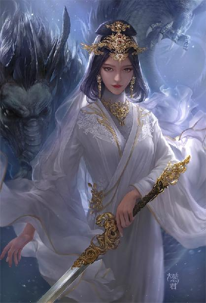

第78集·皇图天策
唐国篇（2）
出版日期：2019-06-07
【本集内容简介】
谁能想到，“侍儿扶起娇无力”的杨贵妃，竟然像女恶霸一样，在长安大道上纵马飙车，当街斗殴？
“借问汉宫谁得似，可怜飞燕倚新妆。”赵飞燕为表露心迹，当众奉献后庭。程宗扬却仿佛走进了一个梦境，从自己口中，聆听到一段如真似幻的故事。
而梦境中那位帝国皇后的面孔——与赵飞燕一模一样！
※ ※ ※ ※ ※

封面人物：剑玉姬
光天化日之下，长安城中恶少公然在街头纵马飙车，追逐斗殴，以至于血洒长街。如此肆无忌惮，又正值泼寒胡戏，四周观者如堵，但让程宗扬意外的是，围观众人只远远看着那个戴着饕餮面具的美女双手叉腰，把对手踩在脚下得意大笑，没有一个人上前阻拦的。
那饕餮美女不爽地一瞪凤目，喝道：“老娘为民除害，怎么连个叫好的都没有？是不是和这些害虫一党的？”
当即有人气沉丹田，大叫了一声：“好！”
众人如梦初醒，纷纷叫道：“太真仙子打得好！”
“仙子除暴安良！”
“太真仙子为民除害！威震长安！”
几名被堵在街上的教坊乐手当场打起羯鼓，歌伎甩袖展喉，声情并茂地唱了一段《周处除三害》。
那胡人已经放弃挣扎，死狗一样被饕餮美女踩在脚底。杨美女还嫌不过瘾，又把几个受害者都揪过来，在街上跪成一排，拎着马鞭挨个教训。
被甩上坊墙的少年还在昏厥，照样被两名同伴挟着跪在地上，杨美女抽了几鞭都没把他抽醒，也没再理他。最倒霉的是那个被扔到渠里的家伙，他浑身都是污水，衣裤都快结出冰茬，冻得瑟瑟发抖，还得老实挨训。好在杨美女嫌他身上太臭，怕弄脏马鞭，没有抽他，算是因祸得福。
石超到底是异乡人，不识得底细，跟着祁远、敖润、吴三桂等人胡乱叫了几句好，然后大眼瞪小眼，都是一肚子的莫名其妙。
这位太真仙子究竟什么来历？街头公然揍人，如此嚣张跋扈，却无人敢惹，连衙役都绕着走？
他们几个小声嘀咕，旁边的袁天罡这会儿却像是被什么吓到了一样，一副失魂落魄的样子。每当饕餮美女的鞭子落下，他眼角就是一阵抽搐，似乎看到了什么不该看见的东西，又像是梦想撞上残忍的现实，琉璃般碎了一地。
“她是杨玉环……”袁天罡喃喃道。
敖润道：“刚才喊的好像就是这名儿？”
“这是杨玉环？”袁天罡口气中充满了不敢相信。
石越刚挤过来，他倒是知道些底细，在后边压低声音说道：“太真仙子杨玉环——长安城一霸！没人敢惹。这几个不长眼的倒霉了。”
我想问的根本不是这个好不好！
袁天罡一口闷气跟铺路石一样憋在心头，心脏病都快犯了。跟这些人实在没有共同语言，他们怎么知道杨玉环这个名字意味着什么？
袁天罡拽住程宗扬的胳膊，咬着牙道：“她是杨玉环！”
程宗扬镇定自若，“老袁啊，你也在六朝混不少年头了，用得着这么大惊小怪吗？”
“杨贵妃啊！婉转蛾眉马前死啊！”袁天罡几乎要迸出眼泪，“你见过这么暴力的杨贵妃吗？”
“这算什么。”程宗扬抬了抬下巴，慢悠悠道：“你瞧瞧旁边那个——潘金莲。”
“啥？”
“你没想歪，就是那个潘金莲。”程宗扬拍了拍他的肩膀，“她男人是武大郎，没成亲就死了。小叔子武二，一个臭不要脸的。”
袁天罡看看衣着暴露，充满暴力的凶猛美女杨玉环，又看看旁边白衣如雪，仿佛带着圣洁光环的潘金莲，强烈的反差使他几乎要窒息了。
杨玉环训得高兴，潘金莲提剑守在她身后，一边戒备，一边心急如焚，却又无可奈何。
周围众人使劲拍着马屁，一片阿谀声中，忽然间传来一声口哨。
声音虽远，潘金莲却如受雷殛。她抬眼朝声音来处望去，随即美目中流露出无穷的羞恼和痛恨。
程宗扬吹完口哨，笑眯眯朝她招了招手，然后视线向下，刻意在她胸前高耸的部位停顿了片刻。
潘金莲藏在面纱下的玉颊像被人抽了一记般瞬间涨红，握剑的手指不由自主地拧紧，直想一剑刺穿那个该死的混账！
“滚！”
杨玉环终于训完，一声娇叱，几名少年如蒙大赦，互相扶携着，一瘸一拐地溜了。
杨玉环得意地转过身，一眼觉出好友的异样，好奇地问道：“你在看谁？”
潘金莲收回目光，冷冰冰道：“有贼人，此地不宜久留，走。”
杨玉环才没这么容易被她敷衍过去，顺着她方才的视线望去，正与程宗扬看了个对眼。
程宗扬微微一笑，抬手在唇上按了一下，给了她一个飞吻，然后顺势按在胸口，极有风度地躬身施了一礼。
杨玉环哼了一声，翻了个白眼，拉着潘金莲踏上轻车，扬鞭叱马，往西边的朱雀大街驶去。
※ ※ ※ ※ ※
“云想衣裳花想容，春风拂槛露华浓。”
袁天罡靠坐在门边，一脸生无可恋地击着门槛，幽幽唱道：“若非群玉山头见，会向瑶台月下逢……”
声音凄悲彻骨，如泣如诉，如怨如慕。
程宗扬挨着他坐下，“老袁，有什么想不开的？难道因为杨贵妃变成街头小太妹，你接受不了了？”
袁天罡没有理他，自顾自唱道：“一支红艳露凝香，云雨巫山枉断肠。借问汉宫谁得似，可怜飞燕倚新妆……”
“你得这么想，”程宗扬宽慰道：“既然杨美女能变成太妹，潘姐儿能变成圣女，秦桧跟吴三桂为什么不能变成忠臣呢？对不对？贾文和也可以变成心慈手软的大善人啊。”
袁天罡声音拉高八度，嘶声唱道：“名花倾国两相欢！长得君王带笑看！解释春风无限恨！沉香亭北倚阑干！”
老袁这是魔怔了啊。程宗扬给蛇奴使了个眼色。
片刻后，环佩轻响，一双纤手捧着一只玉盏，盈盈递到袁天罡面前。
袁天罡心碎欲绝，本不想理会，可那双手纤美如玉，晶莹柔润得让人挪不开眼睛。
袁天罡茫然抬起眼睛，入目的如花玉容让他一阵心悸，冥冥间一声梵唱，使他三魂七魄都为之震动。
如果说杨玉环是丰腴火辣，风情万种，艳得令人眩目，眼前的美女便是优雅明艳，有若空谷幽兰，艳色倾城，却遗世独立，美得让人心碎。
程宗扬接过玉盏，那美人儿嫣然一笑，飘然而去。
程宗扬把玉盏递到袁天罡嘴边，灌了一口。袁天罡顿时呛住，咳嗽数声才回过神，如梦方醒般道：“她……她……”
“我内宅的。姓赵，小名飞燕。”
“你……你……”
“把脸上的水擦擦，咱们慢慢说，时间还长着呢。”
良久，袁天罡终于镇定下来，满腹的幽怨和失落，最终都化为一声长叹。
“同样是穿越，我半生挣扎，萧条此身，一直混迹底层，看不到任何翻身的希望。你却出入宫禁，定邦封侯。真不知道是你运气好呢，还是能耐大呢？”
“两者兼有吧。”程宗扬坦然道：“运气肯定是第一位的，不然我在大草原就死了。跟我一起穿来的段强，运气就不好。”
“得了吧，他运气算好的，好歹穿越了。要不然一下飞机就是个死。”袁天罡吐槽道：“随身带着毒品，他是没打算活啊。”
程宗扬无奈道：“他怎么想的我也不知道，也许浪惯了。我就想不明白——老袁，你怎么混这么惨呢？好歹你也多出上千年的知识储备吧。”
“你走的贵族路线，怎么知道我们底层生活的辛苦？跟你说，和底层的百姓比，我还算混得不错的，起码还能捞口饭吃。混不出头能怨我吗？你以为多的那点知识就能用吗？”
袁天罡一肚子的牢骚，“我懂点历史不假，可六朝的历史能叫历史？唐太宗是李建成你敢信？李世民生到李隆基后边，压得安禄山跟狗一样，给他效力一辈子，一高兴就让他跳个胡旋舞，君臣相得，如鱼得水。他们是高兴了，我懂的那点历史全他妈喂狗了。”
“抄诗啊，多少人都是这么干的，一抄就火了。”
“六朝秦汉唐晋宋昭南，你是抄唐诗还是抄宋词呢？”
“宋以后的不也有吗？”
“能抄的早就被抄完了！再说你抄两句‘人生若只如初见’，能跟‘人生到处知何似，应似飞鸿踏雪泥’比吗？别说一个文抄公，就算是明清一流诗词大家穿过来，你是想跟李白比呢，还是跟杜甫比呢？王维、王勃、王昌龄、李贺、杜牧、白居易、李商隐……哪个不甩你五六七八九十条街？白员外抄的那些诗为什么没传开？人家失传的就盖你好几头好吧！”
“那不还有北国风光……”
“行，一代天骄，成吉思汗——别人问了，成吉思汗是谁啊？为什么不是冒顿呢？再说你一个该死的穷鬼，说人家秦皇汉武略输文采？说什么风流人物还看今朝？要脸吗？别人当时就问了，你配钥匙吗？”
袁天罡越说越激动，“你他妈也配？你是配一把呢？还是配两把呢？你配几把！你他妈配个鸡巴！”
老袁这是被戳到痛处了？看他这情绪，指不定真被人这么问过，脸都被打肿了。
程宗扬赶紧道：“好好好，是我见识浅。老袁你别激动，咱们好好说。”
袁天罡一声长叹，“底层想翻身太他妈难了。吃了上顿，操心着下顿，日夜操劳，也积不下几文钱。没有资本能做什么？建发电厂？别闹了，拿铜丝缠个线圈还得有铜呢。”
程宗扬道：“练武呢？六朝这种修炼的。”
袁天罡露出苦笑，“你运气真好，居然有修炼的天赋。寻常人顶多在一二级打熬身体。想学上乘功法，那得有天赋。天赋这东西不说百里挑一，十个里面有一个，那就是百分之九十的淘汰率。何况再往上，天赋越要紧。比如你……”
袁天罡打量了他一下，“有三级了吧？再往上可就难了。”
“差不多吧。”程宗扬道：“你没有吗？”
“我？不知道。”袁天罡自嘲地说道：“穷鬼也想赌这百分之十的机遇？先填饱肚子吧。”
程宗扬琢磨了一会儿，“不对啊。我见过一支军队，两千多人全是三级以上的修为，那不是应该谁都能修炼吗？”
“也许是从两万多人里选出来的呢？”
还真有可能。不过程宗扬直觉并非如此。以岳鹏举在六朝的时间来看，未必有从容挑选的空闲。也就是说，他很可能一开始就选出来两千名有足够天赋的军士，组建了星月湖大营。
他是怎么做到的？
袁天罡积怨已久，可惜栏杆拍遍也没半个知音，此时终于有机会一吐为快。等发泄完，他也冷静下来，抹了把脸道：“方才失态了。唉……”
程宗扬笑道：“想开点就对了。六朝被搞得乱七八糟，杨玉环不当贵妃当太妹不也挺好吗？好歹没有流落烟花……”
“你闭嘴！”袁天罡幽幽道：“杨贵妃是我上辈子的梦中情人。”
程宗扬无语半晌，你这是没见着岳鸟人，不然你们两个非打起来不可。
“老袁啊，你这么一把年纪了，难道一直没成家？”
“成什么家啊，我逃命还来不及呢。”袁天罡自嘲道：“丧家犬一条，就没有安定下来的时候。”
“那你……”程宗扬朝他下边看去。
袁天罡腿一夹，戒备地说道：“怎么着？”
“总有生理需求吧？怎么解决的？”
“庸俗！”袁天罡痛斥道：“低级趣味！”
程宗扬也不说话，只一脸纯良地看着他。
袁天罡也觉得没意思，讪讪地闭上嘴，过了一会儿才幽幽道：“告诉你也不妨——我的预知能力全靠童身。”
“真的假的？你没破过戒，怎么知道预知能力就靠它呢？”
袁天罡指了指脑袋，“预知。一近女色，就是死路一条。你还会选吗？”
程宗扬摸了摸下巴，“换成是我吧……会！”
“滚蛋！”袁天罡啐道：“你个要色不要命的。”
※ ※ ※ ※ ※
贾文和将一张素纸放在案上，上面是刚搜集来的各项资料。
杨玉环，出身弘农杨氏，父为京官。
六岁随父入觐，以聪慧为先皇宪宗器重，收为养女。
八岁替先太后祈福，入咸宜观为女冠，号太真。
九岁封公主，以道号为公主号，称太真公主。开府，食邑千户。
十一岁宪宗驾崩，穆宗立，晋长公主，加封五百户。
十五岁穆宗驾崩，敬宗立，晋大长公主，加封一千五百户。
十七岁敬宗驾崩，今上继位，晋镇国大长公主，设太真观，加封两千户。
杨玉环公开的资料并不多，至少程宗扬就知道一件很重要的事被遗漏了：她六岁时，与某个鸟人见过一面——这很可能是她的命运转折点。此后她的人生就仿佛开挂一样，一路光芒四射，直奔巅峰。
薄薄一页纸，透露出的信息却极不寻常，其中单是皇帝就涉及到四位。程宗扬不得不先捋上一遍：如今这位唐皇是宪宗的孙子，穆宗的次子，敬宗的弟弟。杨玉环被宪宗收为养女，名义上是穆宗的姐妹，也就是敬宗和今上的姑姑——虽然她今年才二十三岁，已经历经了四位皇帝。封号也由公主到长公主，再到大长公主、镇国公主。
唐国皇帝收养义女并不罕见，事实上算是一种常规操作。历代唐皇收养了一堆的公主，有宗室女，有异姓的外甥女，甚至还有与宗室不沾边的臣子女，也被唐皇收为己女，然后给个公主的封号，送去和亲。不过收养的公主通常都会改为皇室姓氏，像杨玉环这样既不改姓，又不送去和亲的，算是绝无仅有的殊遇了。
而且唐国公主惯例食封三百五十户，杨玉环这位异姓镇国公主足足食邑五千户，更何况九岁便即开府，有了干预政事的资格！
这里面的意味就太复杂了。程宗扬不明白，岳鸟人究竟给那位宪宗灌了什么迷魂药？别说亲闺女，亲儿子都未必有这待遇！
怪不得杨玉环是长安一霸，打遍十六王宅无人敢惹。如今的唐皇说不定就被她这位小姑姑给揍过。
但反过来说，唐国的皇帝死得也太勤了。六年换了四个皇帝，不知道唐国主持登基大典的是哪位大臣，这经验都能刷到满。
“死一个皇帝晋一级，这是唐国的惯例？”
贾文和道：“宪宗十九位公主。晋位长公主者唯其一人。”
十八个亲生公主都没有晋封长公主，一个收养的异姓女儿，居然连升数级，晋位镇国大长公主？
程宗扬眉头越皱越紧，忽然道：“唐国这些皇帝太能生了！别的朝代一堆绝嗣的，越到末世越生不出来。唐国诸皇随便生生，就是十几二十几个，李家的血统很强大啊……”
袁天罡正在凝神思索，听到这段差点儿急眼了，“你怎么总扯这个？”
“走神了！走神了！”程宗扬赶紧收回思绪，“她怎么一路晋封的？有什么内幕？”
贾文和道：“宪宗刚明果决，人称中兴之主，唯壮年沉湎长生，服食金丹暴死。穆宗性喜游乐，无心政事，继位两年便即中风，服食金丹暴死。敬宗喜游更甚，在位两年，为宦官所弑。”
“被宦官杀了？”
程宗扬听着都不可思议。宦官与大臣不同，唯一的权力来源就是皇帝，全靠着皇帝撑腰，才能作威作福。太监弑君，那不等于自杀吗？
“此事扑朔迷离，颇多难解之处，宫闱之秘，难知其详。”
六年换了四个皇帝，两个吃金丹吃死的，一个被宦官给杀死的——唐国乱成这样居然还没有散摊子，真不知道祖上积了多大的德。
贾文和道：“宪宗驾崩时，太真公主年纪尚幼。穆宗以先帝遗命，封其为长公主。此事还可以说是宪宗对太真公主分外器重，穆宗子承父志。待穆宗驾崩，敬宗继位，加封其为大长公主，其中必有缘故。”
程宗扬道：“敬宗继位，杨玉环在其中立功了？”
贾文和指着纸上的条目道：“加食邑一千五百户，非但有功，且是大功。”
唐国食邑并非实封，而是按户数折为赋税作为俸禄。一次加封一千五百户，相当于加封了一个开国县公。
袁天罡嗤道：“如此大功，却扶立了一个昏君。”
程宗扬道：“敬宗很昏庸吗？”
袁天罡道：“敬宗在位二年，终日游猎享乐，不理朝政。先是被几个工匠闯入宫中，登堂升殿，堪称六朝第一笑谈，后来又被群奴所弑，岂止是昏庸！”
“也许是他们关系好呢？”程宗扬猜测道：“估计他们年龄差不多，一起玩大的。杨玉环都这样了，扶立个喜欢玩的，也很正常。那后面这个两千户呢？”
贾文和道：“今上与太真公主同龄。敬宗遇弑，京师动荡，今上入太真公主府暂避。后被神策军迎立，登基为帝。”
程宗扬明白了，“护驾之功啊。”
如今这位唐国皇帝堂堂一个亲王，宫中出事，居然跑到杨玉环府里躲避，可见杨玉环在长安城的凶名赫赫，连未来的皇帝都将她当护身符了。
“宪宗、穆宗、敬宗……”程宗扬看着袁天罡，“现在这位皇帝是谁？”
“按道理讲，应该是文宗。不过依我的经验，”袁天罡淡定地说道：“李元吉重生也不是没可能。”
意思是已知的历史基本上等于喂狗了，连参考的价值都谈不上。
程宗扬没好气地说道：“我还李元霸呢。”
如果这些信息的真实性没有问题，杨玉环以异姓女晋位镇国公主的原因就清楚了。先是受宪宗器重，然后在两任皇帝继位中立有大功，算下来食邑五千户都是少的。比如自己，只拥立了一个，收获可比她大多了。
当然，自己能裂土封侯，功劳一大半都要算到朱老头身上。汉国上下为了安抚那位爷，也是煞费苦心。
问题是她当时才十七岁，哪里来的这么大的威望？还有，潘姐儿跟杨玉环是什么关系？潘姐儿的光明观堂介于佛道之间，杨玉环可是正经的女冠，这背后会不会与岳鸟人有关？
程宗扬想了一会儿没想明白，暂且放下。这事儿用不着瞎估摸，如果自己没猜错，用不了多久，潘姐儿就该来找自己报仇了。要不要趁机设个圈套，把这个送上门来的肉包子给留下来呢？
敖润僵着脸进来，“程头儿，衙内和吕少回来了。”
“回来就好。咦？你这什么表情？”
“他们抢了个女人回来。”
“噗！”程宗扬一口茶水喷到案上。
※ ※ ※ ※ ※
“师父！”高智商兴奋地叫道：“今天的泼寒胡戏你去看了吗？那场面！老热闹了！”
程宗扬寒着脸道：“先说怎么回事！当街抢人，你们真能耐啊！”
“不怨我啊！她先动的手！”高智商赶紧往旁边一指。
那女子十六七岁年纪，身姿纤细，楚楚动人，身着彩衣，踏着一双木屐，裙后还镶着一条狐尾。却是胡戏时在车上泼水的那些歌伎。
“她泼水不说，还拿绳索套我。吕少一个反手，就把她从车上拽下来了。”高智商比划了几下，然后道：“长安这边的规矩，泼寒胡戏上大伙随便抢，谁抢到算谁的。”
“泼寒胡戏还有这规矩？”
袁天罡道：“差不多吧。不过歌伎多是泼水，没怎么听说用绳索的。”
这倒是，让这些娇滴滴的丫头拿绳索套人，还不够大伙分的。
袁天罡说着看了看旁边的吕奉先，“她八成是看中这位公子了吧？”
那歌伎的小脸蛋立刻红了起来。
看看胖乎乎坏兮兮的高智商，再看看头戴金冠，脸上刻着大写“帅”字的吕奉先，程宗扬即使心偏到胳肢窝里，也不得不承认自家徒儿跟人一比，确实是挫了点儿。活生生一个高帅富，一个土肥圆。
程宗扬咳了一声，“忘了介绍。这位是吕奉先吕少爷——马中赤兔，人中吕布那个。”
吕奉先道：“谁是吕布？”
“没说你。”
“哦。”
袁天罡吃了一惊，这么好打发？看来是本尊了，果然够二的……
吕奉先那卖相，在整个六朝都数得上。何止英俊帅气？如同阶前玉树，兼且勇武过人。要知道这小子现在还没有长开，再大几岁，个子猛蹿到一米九，蜂腰猿臂，琼鼻劲眉，面如冠玉，唇红齿白，再加上种马一般的事物——保证姑娘、基佬们一见就走不动路。
程宗扬尽量露出和颜悦色的表情，对那歌伎道：“你叫什么名字啊？”
那歌伎怯生生道：“奴家小环。”
刚遇见杨玉环，这就来个小环？真够巧的。
“哪里人啊？”
“奴是……”小姑娘眼睛闪了闪，“神通寺的。”
程宗扬怔了一下，“庙里的？”
袁天罡解释道：“泼寒胡戏是长安盛事，动辄数万人，各坊的寺庙也会请些歌伎上街，借机弘法，招揽信众。”
人都被抢走了，还弘什么法啊。
程宗扬道：“既然如此，我让人送你回去……”
高智商抢道：“我去送！”
程宗扬还没开口，那小姑娘先急了，指着吕奉先道：“我要他送！”
高智商忿然道：“这还由得了你？实话告诉你，本衙内抢你是给你面子！这也就是在长安，要是换个地方，本衙内当街就把你给……”
“你给我闭嘴！”
高智商悻悻然闭上嘴。
程宗扬看看吕奉先，再看看高智商，“敖润，你去送。”
小歌伎委屈地说道：“我不要大叔送。”
“蛇奴！你送她回去。”
蛇夫人笑吟吟上前拉起小歌伎，“走吧，姐姐送你回去。”
好不容易把抢来的小歌伎打发走，程宗扬头痛地看着吕奉先，“去皇图天策府报到了吗？”
“投帖了，他们还给了我一张照文，说过了元旦拿着去就行。”
吕奉先随身带着照文，程宗扬接过来一看，起首一行墨字，赫然写着：录取通知书。
后面写着：“兹有吕奉先者，年十六，汉国洛都人。经审核，入本府功曹科一舍学习。请携此文于正月初五报到。”
落款是皇图天策府的篆书大印。
“皇图天策府是谁建的？”
袁天罡道：“李世民吧。”
“还搞个录取通知书出来，会不会……”
“未必。”袁天罡道：“也许是皇图天策府某人所为。”
“如今天策府管事的是谁？”
“我知道，”吕奉先道：“卫国公李药师。来的时候霍哥跟我说，卫公最讨厌别人拍马屁，让我见着就骂他，一骂他就会对我另眼相看。”
“……你不会真信了吧？”
“嗯？”
“别听你霍哥的，那小子坏得很！要是有机会拍马屁，千万别犹豫！有多大劲儿使多大劲儿，狠狠拍！”
“呃……”吕奉先恍然大悟，“我明白了！”
他是真明白了，还是自以为明白了，程宗扬也弄不清楚，只能随缘吧。
※ ※ ※ ※ ※
整个下午程宗扬都在清理祁远带来的账目，了解唐国的商业环境。结果有喜有忧。喜的是唐国的商业远比自己想象的要发达，商业网络遍及天下，甚至与万里之外的大秦都有商业往来。发达的商业催生出了成规模的钱庄，甚至飞钱。自己如果推行纸钞，有足够的环境基础作为支撑。
忧的是唐国对商贾的身份限制比汉国更加严苛，不仅商人，连商人的子孙都受到牵连，不得出仕为官，甚至不允许参加科举。
“仰天大笑出门去，我辈岂是蓬蒿人”——以李白的才情纵横，家资殷富，腰缠万贯，结果连科场都进不去，只能奔走于公主门下。
而唐国的科举也足够变态，号称诗赋取士，可杜甫困居长安十年，竟然屡试不第你敢信？堂堂诗圣，考了十年的诗赋都不及格，最后走权贵的门路才混了个芝麻大点的小官，真不知道丢的是诗圣的脸，还是唐国科举的脸。
程宗扬越发怀疑，所谓白员外一考即中进士，八成也是瞎编的。
一直忙到晚间，石超再次设宴，在程宗扬的极力劝阻下，这回没再叫教坊女子。加上祁远，三人总算能静下心，商量唐国的生意。
石超转交给程氏商会的六处商铺，分布在长安和几处藩镇所属的州郡。按照石超的经验，这些藩镇虽然对朝廷戒心十足，但从不为难商人，甚至大部分藩镇对商贾颇为礼遇。政治和军事上的实质割据，对商业流通并没有造成太大影响。反而是朝廷中枢，在商贾中的名声极差。
石超道：“唐国不仅盐铁由朝廷专卖，还对竹、木、茶、漆征税。尤其是如今这位王宰相，连茶叶也想专卖。听说朝廷正在拟文，准备过完元旦，便要下诏将天下的茶树全部移栽到官场。”
祁远道：“我在路上遇到几名浮梁的茶商，他们也在说这事。浮梁一年产茶七百万驮，占整个唐国的四成以上。如果朝廷禁止民间私种茶叶，他们只有造反一条路了。”
程宗扬已经知道唐国幸运地避开了安史之乱，但四十年前经历了黄巢之乱，虽然最终平定下去，朝廷威信却一落千丈，以至于藩镇割据，尾大不掉。黄巢是私盐贩子，莫非还要再出一个私茶贩子，把安史之乱给补上？
“我看唐国也不像很穷的样子啊，用得着这么竭泽而渔吗？”
石超道：“这我就不懂了。”
祁远道：“我觉得唐国挺富的。不光朝廷有钱，老百姓也有钱。”
程宗扬想了想，“唐国的生意仍以水泥为主。胖子，这事还是你来做。”
石超咧嘴笑道：“老大放心！我保证做得妥妥的！”
“要留心，别只给一家供货，尽量分散，保持各藩镇的平衡。”
“我懂。广撒网，勤捞鱼，谁都不得罪。”
“我们在唐国真正要做的生意，还是金融。推行纸钞，这才是我们整个商业网络的核心。我有一个想法，你们两个也来参详一下……”
程宗扬的想法并不复杂，由于石超在唐国的水泥生意风生水起，他才萌生出这个念头：各藩镇既然对水泥求之若渴，那么不妨要求他们先支付定金。石超把水泥卖到一石两枚金铢，定金就先收取一半，每石一枚金铢。
这定金也不是白收的，而是以程氏商会的名义，支付等额的纸钞作为凭证。藩镇凭借纸钞不仅可以优先取货，还可以在程氏商会名下的店铺、钱庄进行消费和兑现。
“我打算建立一个纸钞联盟，程氏商会、云氏商会，当然，还有你们石家，作为发起者。加入联盟的各方，名下所有商铺均可以使用纸钞进行交易。由程氏商会在各地设立钱庄，作为结算中心，进行钱铢的发行和兑换。这样的话，可以极大地降低交易成本，提高钱钞的周转效率。”
石超道：“店铺可以兑换纸钞吗？”
“大额在钱庄兑换，小额的可以在店铺兑换，尽量方便用户。”
祁远道：“最小面额是多少？”
“目前面额最小的是一枚银铢，一百文。”
石超道：“最小一贯就足够了，再小太过麻烦。”
“小面额的主要在江州和舞都境内使用，以代替钱铢。”
石超犹豫了一会儿，“纸钞的利润很大吗？”
程宗扬笑道：“用纸就能换来真金白银，以钱生钱，你说利润会小吗？”
石超试探道：“要不……我也参一股？”
“还用问？你想干，我欢迎还来不及呢。”
石超精神一振，“怎么用钱来生钱？老大，你教教我？”
“钱生钱的花样太多了，最简单的一种，把钱借出去，吃贷款的利息。比如你这会儿有一万金铢，年息两成借出去，一年就能拿到两千金铢。”
“万一借款的还不上赔了呢？”
“这就需要风险控制了。你把钱借给一家，一旦赔了就血本无归。你要借给一万家呢？这就变成一个概率问题。比如一半会赔，一半会按期归还，如果想保持不赔钱，贷款的利息就要保持百分之百。如果我们进行风险控制，把可能赔钱的降低到一千家，那么你贷款的年利率定到百分之十二就能盈利。百分十二的利息，相当于月息百分之一，你愿意借吗？”
“当然要借！这利息简直低得要命！”
程宗扬笑道：“你明白钱庄怎么赚钱了吧？”
石超连连点头，“明白了，明白了。老大，这生意必须要你这样有地盘有实力的，才好做起来。让我自己做，利息再高我也不敢。”
程宗扬大笑道：“胖子，这帮兄弟里就数你做生意的眼光最好，一眼就看出关键来。没错，我现在有宋国官方承认，加上江州、舞都两块地盘，才有底气玩这个。不瞒你说，我在舞都专门划了地方，兴建纸坊、颜料坊和印刷坊，准备花上十年工夫，每年投入一万金铢，专门研究纸钞的印刷。”
程宗扬说着拍案道：“铜山银山算得什么！我自己就能印出真金白银！我要让程氏商会的纸钞，比真金白银还值钱！”
祁远也听得兴奋起来，“程头儿，真能做到这样？”
“老四，你没去洛都。当时天子推行算缗令，咱们商会的纸钞就比等价的铜铢还贵。”
石超道：“程哥！我跟你干了！需要多少钱，你说！”
“别急。钱庄的章程回头我给你整理一份，你先看着。弄通了，我们再来细谈。”
“老大！我听你的！”
※ ※ ※ ※ ※
宴罢，程宗扬与祁远步行返回住处。程、石两宅格局相同，都是前后三进的院子，第一进包括马厩、柴房、厨房和两排厢房，里面住的是作为护卫的星月湖大营一众兄弟。第二进住的是贾文和、袁天罡、吕奉先和祁远等人。最里面一进作为内宅，面阔五间的正房，两侧是内厨房和厢房。正房上下两层，程宗扬连同侍奴、姬妾住下来绰绰有余。
两宅相通的月洞门位于第二进，穿过门洞，便看到贾文和的房间还亮着灯。他一到长安，便开始着手整理唐国的信息。各类市面上能够搜集到的文牍资料、市井传言，流水般送了进去。那些枯燥无比的文字、数据，程宗扬看着就眼晕，偏偏贾文和乐在其中，丝毫不觉厌烦。程宗扬倒是觉得，还是坊间流传的八卦段子更有趣。
程宗扬没去打扰贾文和，与祁远分别之后，便返回内宅。
通往内宅的是一排倒座房，供内宅的奴仆居住，此时守门的是张恽。他白捡了一条性命，又是跟着旧主吕雉同来，识得舞都侯这位新主人的厉害，拿出当日服侍太后的全副本领，伺候得十二分尽力。
赵飞燕出自汉宫，张恽诸事用心，程宗扬便让他也住在内宅，使唤起来倒是省心不少——至少比中行说那个杠子成精的犟驴好使唤。
进了内宅，便看到正房楼上灯火通明，窗内隐隐传来笑声。
程宗扬道：“她们这是玩什么呢？”
张恽小心道：“晚间兰姑奶奶过来了，方才刚走。琳姨娘亲自送出来的。”
程宗扬一笑，兰姑既然回来，祁远今晚就有伴了。
楼上佳丽如云，一众女子都聚在房内，正围着一名艳女笑闹不已。
立在人群中间的是尹馥兰，她丰腴的玉体几近全裸，在灯光下又白又艳，一副肉欲横流的荒淫场面。她身上穿着一套程宗扬眼熟无比的内衣——一条绯色的乳罩，只有巴掌大小，富有弹性的轻丝被丰腻的乳肉挤得满满的，仿佛要绷开一般。下面是一条镶着蕾丝边的绯红色内裤，质地薄如蝉翼，灯光一映几乎透明，连秘处的沟壑都若隐若现。
在蛇奴的吩咐下，尹馥兰转过身，在厅中扭腰摆臀地走了一趟，引得众女纷纷鼓掌娇笑。
“你们玩什么呢？”程宗扬道：“这衣服从哪儿来的？”
阮香琳笑着把他扶到坐榻旁，“兰姑方才过来，带了一批新鲜的衣物，说是如今建康最流行的霓龙丝衣。姐妹们看着好玩，让奴婢们穿来试试。听说兰儿在太泉的时候穿过类似的，便让她先来，给大伙做个样子。”
霓龙丝衣出自建康的盛银织坊，从原料到款式，都是自己一手打理出来。只是囿于原料和纺织技术，合格的成品极少。没想到一年多不见，如今已经做得似模似样。
新鲜衣物对女人的诱惑确实非同一般，不但一众侍奴全都来了，连赵氏姐妹也禁不住好奇，过来观瞧。程宗扬跃到坐榻上，毫不客气地张开手臂，将姐妹俩一左一右搂在臂间，笑道：“该谁了？”
蛇夫人道：“光奴，你先来。”
案上放着一堆精巧的织锦丝囊，角上绣着篆文的“盛銀”二字。成光上前拿了一只，打开来，只见里面放着几片淡绿色的丝物，又薄又小，一整套所谓的内衣都能轻易握在手心中，轻如鸿毛。
成光身为江都王太子妃，各色名贵织物早已见得多了。她在王宫时所用的素纱单衣，轻薄如烟，晶莹似水，整件衣物叠起来只有寸许大小，甚至能放进胭脂盒中。可手中的丝物不仅更加轻盈光滑，而且有着远超蚕丝的弹性。她试着拉了一下，小小一块寸许大小的织物，能拉伸出二到三倍的幅度，依然柔韧致密。
只是这些织物的款式极为奇特，一件是两个半圆形，两侧系有长带；另一件是又窄又小的三角形。成光拿在手里，根本不知道该怎么穿。还是尹馥兰上前，让她脱去衣物，光着身子将两个半圆形的轻纱罩在乳上，兜紧，然后系上丝带。
那件被称为“乳罩”的织物完美得契合身体曲线，丝带束紧，双乳仿佛被轻柔地托起一样，愈发饱满挺翘，乳间挤出一条白腻的乳沟，重心的转移，使身体也轻松了许多。
下边的内裤同样是系带式的，摊开来是两个相连的三角形，前大后小，薄薄一片。成光分开双腿，在众人面前将那片丝物包在股间，系好腰间的丝带，然后挺直娇躯，让众人观赏。
原本只有寸许大的织物贴着玉股伸展开来，以一个低凹的弧形裹在腹下，上缘只勉强掩住阴阜，整个雪白的小腹都袒露在外。后面的部分更加细窄，直接陷入臀沟内，若不是臀后的细带，就像根本没穿一样。
众女看得好笑，“这织娘好会省布料。”
“细得跟蛛丝似的，还不如画身上罢了。”
“便是半遮半掩才有趣。”罂粟女道：“瞧光奴这浪蹄子的骚浪样，我小肚子里像有团火在烧呢。”
众女都吃吃笑了起来。
赵合德小脸红扑扑的，低声道：“这样的衣服也能穿吗？好羞人……”
程宗扬虽然看得有趣，可总觉得缺了点什么。他仔细打量一遍，从胸乳看到脚底，才恍然想起，少了女性诱惑的必杀技：高跟鞋。眼前这个年轻美貌的太子妃穿着性感内衣，脚下却只有一双木屐。
不过这身现代感十足的性感内衣，配上古典风格的金齿漆屐，两足白如霜雪，再加上云髻雾鬟，香腮如玉，别有一番娇艳的韵致。
程宗扬勾了勾手指，身姿妖娆的艳婢乖乖举步，娉婷袅娜地走到主人面前，堆起讨好的笑容。
程宗扬把手伸到她股间，隔着霓龙轻丝，抚弄着那只娇嫩的玉户。成光媚眼如丝地娇声呻吟着，一边妖娆地挺起下体。
程宗扬隔着轻丝将她嫩穴撑开，笑道：“你瞧，是不是全都看见了？”
赵合德玉脸飞红，把脸藏到他臂间，又禁不住好笑，掩着口，香肩轻颤。
程宗扬揽住光奴纤软的腰肢一推。成光娇躯一晃，踉跄着跪倒在地。
她已经被调教多时，不待吩咐，便顺从地摆好姿势。她香肩贴在地上，乖巧地举起雪臀，双手将内裤褪到臀下，露出白臀间那只水汪汪的嫩穴。
坐榻的高度正合适，程宗扬不需起身，直接拉开衣物，怒胀的阳物从胯下跳出，正对着艳奴的臀缝儿。
“啊呀！”
成光低叫一声，那根又粗又硬的肉棒顶住穴口挺动了一下，随即重重贯入穴内。
火热的阳物破体而入，成光整个身子立刻热了起来，接着身后传来主人的吩咐：“伏好了，自己动。”
“是，主子。”
光奴娇滴滴应了一声，香腮贴着地毯，穿着木屐的双足并在一处，雪臀高高举起，来回耸动。用自己柔嫩软腻的蜜穴，殷勤地套弄着主人火热的阳物。那条薄薄的小内裤箍在白嫩圆润的大腿上，将掉未掉，充满了诱人的风情。
接下来挑选的是孙寿，她拿到了一套水红色的内衣。水红色不如大红庄重，又不及鲜红热烈，最容易显得俗气，但衬着寿奴雪嫩的肌肤，凸凹有致的玉体，水红色的霓龙轻纱宛如染在白滑如玉的身子上一般，倍显媚艳。尤其是那套内衣中还多了一双同样款式的丝袜，长袜上缘绣着连枝的玫瑰，紧贴着雪白浑圆的大腿，配着鲜红的袜带，灯光下艳丽无比。
在主人和一众姐姐面前，孙寿没有化身藏形，臀后露出一条白绒绒的狐尾，踏着一双红漆木屐，搔首弄姿地走了一圈。
罂奴笑啐道：“好一个骚答答的浪蹄子。”
“本来就是个狐狸精，能不骚吗？”
“那内裤本来就小，还提这么紧，下面都勒到浪屄里了。”
“是她后面的尾巴撑住了吧？”
“这袜子倒是有趣。过来。滑不溜手的……你也来摸摸。”
众女纷纷点评，还上手摸弄。孙寿含笑逐一展示内衣的细节，最后被唤到主人坐榻前，仰身躺下，两条穿着丝袜的美腿玉枝般绽开，几名侍奴纷纷伸手，插进内裤里面，轮番把玩她的玉户。
孙寿原本的矜持和体面早已荡然无存，她“咯咯”娇笑着，水红色的胸罩被扯到乳下，露出两只白腻圆润的玉乳，下面的内裤也被扯开半边，任由诸女媟亵狎玩。
忽然室内响起一阵笑声，却是阮香琳扯着一条玉白色的丝带，从屏风后面出来。那条销魂玉带就像钓鱼一样，扯出一名女子。
湖阳君孙暖将丝带咬在齿间，狗儿般四肢着地爬到厅中。她当初因为听了孙寿的劝说，投到程侯门下，原本只是走投无路的无奈之举，眼下尚未得到女主人的允许，还算不得正式入门。结果程侯内宅诸女惯会凌辱欺虐，短短数日，她二十多年来享尽荣华的尊严和体面，便被践踏得一丝不剩。
在程侯内宅，随便一个奴婢都可以任意摆布她，种种羞辱和戏弄有如家常便饭。陡然落入如此境地，孙暖原本还有些不情愿，可看到以往被族中视如珍宝的孙寿同样在内宅做低伏小，甚至扮演成妻子的角色，与那些侍奴“夫君”们轮流欢好，才终于明白今时不同往日。
连日来的遭遇，让孙暖的期望已经跌至谷底，可就此罢手，又难以割舍。毕竟在程侯门下，即便含耻忍辱，尚且还有锦衣玉食。程侯并非吝啬之人，内宅的饮食用度逾于王侯，经历了一路的颠沛流离，孙暖对此颇为不舍。
更让她无法放弃的，是在程侯庇护下所获得的安全感。她从汉国一路逃到唐国，此时才终于有了可以遮风挡雨的落足之处，不必再担心曾经那些朝不保夕，随时都可能有性命之忧的日子。相比于生死危难，些许羞辱也算不得什么了。
几日下来，她也知道如今程侯内宅除赵氏姐妹以外，都是些奴婢，名分最高的就是这位阮姨娘。
仅仅一个妾而已，此时却是她高不可攀的存在，甚至还因为选中她的是阮姨娘，而不是成光、兰奴那样只能屈身于侍奴，使得她生出了一丝别样的情绪。骄傲中，还有一丝隐隐的窃喜。
孙暖身上是一套湖蓝色的内衣，乳罩又薄又小，只堪堪裹住乳尖，大半只雪乳都暴露在外。她伏着身，丰满的乳球低垂下来，吊钟般摇晃着。玉齿间的丝带在舌上打了个结，晶莹的汗珠滚到鼻尖，一滴滴掉在地毯上。
孙暖手足并用地爬到众人面前，顿时惹来一片笑声。她臀后赫然突起一团，仔细看去，却是两截粗圆的棒状物体，将那条湖蓝色的内裤撑成半透明的颜色，悬空鼓起。从侧面能看到那是两根黑色的胶棒，表面布满颗粒，还抹了一层绿色的膏汁。
此时棒身嗡嗡直响，在两只肉穴内不停转动。充满弹性的霓龙丝在棒尾绷紧，将胶棒固定在她肉洞深处，随着棒身的旋转，湿腻的蜜穴宛如一张红嫩的小嘴般软软开合，一边舔舐着棒身上的膏汁，一边吐出淫液。
惊理拍手笑道：“这个好玩儿。暖丫头穿着内裤，还能看到浪穴和屁眼儿。”
“连内裤都遮不住她的骚洞。”
“上面是新制的媚药吧？暖儿真有福气呢。”
“还有寿儿，两位封君呢。好尊荣的身份，谁知背地里这么淫贱。”
蛇夫人道：“琳姨娘这身衣服更漂亮呢。”
阮香琳眉眼含笑，她穿了一套白色的内衣，比起孙寿等人身上的更加精美，款式也更大方。上面是连体式内衣，从胸口一直到腹下，镶着花边的乳罩完美地勾勒出双乳浑圆的轮廓，腰身束在丝衣内，盈盈一握。
下面的长丝袜洁白纤透，使得一双玉腿愈发优美。在她脚上，居然是一双白色的高跟鞋。桑木制成的鞋跟纤细挺直，高近三寸，底部包有银片，鞋尖有如尖笋，露出白美的脚背，鞋底镂空出花瓣的形状。此时款款举步，步履轻盈而又优雅，摇曳生姿。
她小臂上戴着长至肘弯的白手套，手中牵着丝带，配着腕上的玉镯，指上的红宝石戒指，浑身洋溢出高雅馥华的贵妇气质，与脚边淫艳而卑贱的美妇相映成趣。
罂粟女讶道：“兰姑方才送来的还有鞋子吗？”
惊理也道：“好高的鞋跟，这可怎么站得稳？”
阮香琳笑道：“我以前在宋宫里头，那位太后也有这样的高跟鞋，还是金子打的呢。我们闲来无事，便让她脱得光光的，只穿了那双金鞋，在宫里遛她。一来二去，也就会穿了。”
蛇夫人道：“那些大盒子里头的吧？我也去找一双。”
蛇夫人兴冲冲去找鞋子，阮香琳将孙暖牵到主人面前，笑道：“暖儿前后两只肉洞都通了一遍，正等着主子享用呢。”
程宗扬看着满脸潮红的孙暖，吹了声口哨。
阮香琳扯起丝带另一端，在成光白生生的身子上抽了一记。成光痛叫一声，乖乖让开。
孙暖爬到榻前，转过身，挺起又大又圆的屁股。从后面看去，那条半透明的内裤下，两根乌黑的胶棒正在蜜穴内不住转动，白滑的臀肉不停震颤着，软嫩得如同一团腻脂。
阮香琳将她内裤扒到一边，拿着胶棒往外一拔，那只艳穴乍然张开，吐出一股淫水。穴中的红肉被布满颗粒的棒身带出少许，湿淋淋翻绽着，红艳欲滴。
灌满淫药的艳穴在灯下不停翕张，阮香琳轻轻吹了口气，穴口的蜜肉立刻一阵抽搐，从穴中挤出一股清亮的淫水。
程宗扬没有进入，而是揽起手边的赵飞燕，抱在怀里，一手托住她的脚踝，脱去她的鞋袜，露出那双晶莹柔美的纤足。
赵飞燕有些害羞地扯起裙裾，想要掩住裸足，却被夫君握住膝弯，将玉足放到湖阳君臀间，接着夫君在她耳间吹了口气，轻笑道：“你来试试。”
赵飞燕玉颊泛起醉人的红晕，白净的玉趾羞涩地勾紧，宛如一枚玉钩。她挣了一下没能挣开，最后还是被他握住膝弯，放到那只敞露的艳穴上。赵飞燕挣扎不过，羞赧地用趾尖蜻蜓点水般一沾，便待收回。可程宗扬握着她的玉腿，不肯松开，反而往前一送。
玉趾没入穴口，怀中的玉人禁不住发出一声低低的惊呼。脚下的艳婢反应更为剧烈，孙暖齿间咬着丝带，鼻中发出一声腻哼，湿腻的穴口乍然收紧，带着一丝急切，竭力含住脚趾。
赵飞燕惊愕地张大美目，小腿僵直，生怕弄疼了她。脚下的艳妇却像是捞到救命稻草一样，白圆的大屁股扭动着往后挺去，蜜穴将并拢的玉趾尽数吞下，腔内的蜜肉痉挛般抽动起来。
赵飞燕只觉脚趾像被一张柔腻的小嘴含住，急切而亢奋地吸吮着。那只蜜穴内仿佛盛满了汁液，湿滑无比，随着蜜肉的抽动，淫液飞溅出来，落在她白美如玉的脚背上。
阮香琳笑道：“这是姁奴新制的媚药，一旦用上，穴内便骚痒难忍，拿到什么都直想塞进去，而且不动还好些，越是挠它，就越痒得厉害。就跟发癫一样，直到泄了身才好消停。”
孙暖心头剧烈地跳动着，两耳仿佛充血一样，神智恍惚，下体的骚痒仿佛从穴口一直痒到心底。脑中只剩一个念头——不拘什么，只要能塞进去便是好的。
脚下的艳妇奋力耸动着雪臀，套弄着那只白玉般的纤足，从趾尖一直套到脚掌中间，直到被足跟卡住。赵飞燕原本还有些吃惊和不忍，但随着那艳婢动作越来越剧烈，她蹙紧的眉头渐渐舒展开来，唇角也微微挑起，甚至主动抬起玉足，戳进艳婢发浪的蜜穴中。
※ ※ ※ ※ ※
“这才对嘛。”
程宗扬在赵飞燕耳边道：“有我在，用不着总那么谨小慎微，事事看别人脸色。这些是我的奴婢，也是你的奴婢，你想怎么教训她们，就怎么教训她们。”
“孙家这两个，以前没少给你脸色看吧？你一个平民女子成了皇后，不知道多少人在背后恨得咬牙切齿。刘骜也不是好东西，为了跟吕家较劲儿，存心拿你当挡箭牌。编排你的私密，给你泼污水，这些事她们都没少干，对不对？”
孙暖伏在地上，一边举着屁股拼命乱颠，一边喘息着说道：“是奴婢的错，求娘娘责罚……”
想起当日所受的屈辱，赵飞燕眼圈不由红了。她在宫中一心安分守己，外面却是数不尽的恶毒流言，甚至勾结她身边的宫女，将她的隐私都公诸于众，想尽办法坏她的名声，作践于她。
孙暖颤声道：“都是吕巨君那厮的主意……”
“他出的什么主意？”
“他让我们买通皇后身边的宫女，趁皇后入浴的时候，窥视她的隐私，绘成画册。还……还……”
“还做了什么？”
孙暖偷眼看向旁边的孙寿。
孙寿自知瞒不过去，求饶道：“奴婢……奴婢再也不敢了。”
“说！”
“奴婢买通长秋宫的内侍，窃取皇后的贴身衣物，交给胡巫施术，诅咒……诅咒她不能生育……”
赵合德忍不住道：“你们！大坏蛋！”
赵飞燕花容惨淡，玉颊时而通红，时而雪白。
“往这边一点。”
程宗扬脱下赵飞燕另一边的鞋袜，让孙寿褪下内裤，露出光润白滑的下体。
赵飞燕这一回没有再犹豫，直接将玉足伸到寿奴腿间，凤目生寒。孙寿双手扶住娘娘纤美的玉足，一边挺起下体，将趾尖送入自己穴内，用自己最软腻的美肉裹住娘娘的脚趾，任由她践踏自己的性器。
赵飞燕偎依在程宗扬怀里，娇躯微微颤抖着，忽然她扬起脸，用战栗的声音道：“肏我！”
赵飞燕裙裾掀开，光着下体偎坐在夫君腹上，那根粗大的阳具笔直竖起，戳进她柔嫩的鸾穴内。她白美而修长的双腿玉扇般分开，左边是湖阳君汁液四溢的大白屁股，右边是襄城君红肉吐露的鲜美嫩穴。
赵飞燕从来没有如此扬眉吐气过，两位尊贵而傲慢的封君，声威赫赫的世家女，曾经对她鄙夷嘲弄、造谣污蔑、百般算计、敌意重重的贵妇，此时如同最下贱的娼奴一般，一左一右，一伏一仰，各自用她们最羞耻最隐秘的部位，来服侍她的脚趾。
赵飞燕想笑，却已经泪流满面。她仰起脸，反手拥着夫君的颈子，泪眼模糊而又笑靥如花地呢喃道：“肏我，肏我……”
※ ※ ※ ※ ※
夜阑更深，灯影交横。一具白艳的肉体侧着身子伏在凌乱的地毯上。她双腿无力地朝两边分开，丰满的臀部圆圆隆起，一条湖蓝色的内裤被扒到臀下，露出股间红肿的蜜穴。饱受蹂躏的阴唇往外翻开，花瓣间兀自滴着淫水，将地毯打湿了一片。
在她旁边，是一名穿着水红色内衣的媚致女子。她无论身材还是肤色，都完美得不似活人，有种妖异的美态。不过此时，她仰着身子，躺在一张又窄又小的矮几上，内裤掉到膝间，露出白软光滑的小腹。一条玉腿上的丝袜被扯下来，从几下将她手脚拴在一处，打了个结。一条雪白的狐尾从她臀后伸出，软绵绵搭在另一边的腿上，原本蓬松的狐毛浸透淫水，有些狼狈地垂到几下。
半人高的仙鹤铜炉旁边，两名女子搂抱着卧在一处。前面是一个穿着浅绿内衣的美人儿，她乳罩和内裤都被扒下，露出乳阴，白嫩的雪臀向后挺起，贴在后面那名艳妇的腹下。
后面的艳妇一条玉腿压在她身上，腰间系着一块巴掌大小的皮革，上面伸出一根粗长的棒子，硬挺挺戳在前面美人儿的嫩穴里。即使在睡梦中，随着她的呼吸，那根棒子仍杵在前面美人儿的嫩穴内，浅浅进出，不时带出一股淫液。
铜炉旁是一张漆屏坐榻，一个姿色绝美的丽人拥着蚕丝被，正睡得香甜。她琼鼻秀口，美貌绝伦，红艳的唇角微微翘起，睡梦中犹自含着一丝笑意。柔软的蚕丝被下裸露出一截白滑光润的小腿，小巧的纤足犹如雕琢过的美玉，玲珑剔透，明艳动人。
坐榻另一边还有人没睡，一名精壮有力的男子正伏着身，压着身下一名小美人儿，不停挺动。那小美人儿娇靥如花，只是此时哭丧着小脸，几乎要哭出来。她齿间咬着一缕秀发，跪在榻上，双手攀着坐榻的扶手，撅着玉团般白皙粉嫩的小屁股，被他干得不住哼哼。
“啊呀……”
她低叫一声，发丝从齿间松开。
身后的男子恍若未闻，仍在奋力挺动。
小美人儿颦着眉头，“夫君……”
“叫老公。”
“老公……”小美人儿柔软的舌尖带着一丝颤音，“天都快亮啦……”
“哪儿这么快？还早着呢。”
“真的！人家都被你干了两个时辰啦。”
“半个时辰都不到。顶多两刻钟。”
“我不行了啦，腰好酸……那里也好痛……痛到肚子里头啦。”
“合德乖，再坚持一会儿。”
小美人儿抽泣道：“我怎么这么倒霉呀……又是最后一个干人家，花心都要捣碎了……”
“别说话，乖乖把阴精泄出来。”
“啊，啊，啊……”
赵合德秀眉颦紧，玉颈伸直，小嘴里发出一串低叫。
片刻后，她撅着屁股，嫩穴一阵抽动，果然乖乖泄了身子。
“再来一次！”程宗扬说着，阳具再次捅进她柔腻紧暖的小穴里，不停歇地接着捣弄。
“啊！啊！老公……坏……坏死了……啊……”
赵合德带着哭腔道。
忽然一只玉手伸来，搭在赵合德颤抖的娇躯上。程宗扬回过头，却是赵飞燕睡眼惺忪地睁开眼睛。
程宗扬压低声音，歉然道：“把你吵醒了啊。”
赵飞燕嫣然一笑，从被下滑出半边身体，拥住妹妹香软的胴体。
两具白生生的玉体纠缠在一起，妹妹娇羞难禁，姐姐却是巧笑嫣然，就仿佛抛去沉甸甸的包袱一样，整个人都变得轻松而从容。
赵飞燕把妹妹搂在怀中，一边伸出舌尖，轻轻舔舐她的耳垂。赵合德玉体娇颤着，把脸埋到她颈间。
赵飞燕柔声道：“合德累了吧？阿姐来帮你。”
“阿姐……啊！”
赵合德低叫一声，却是阿姐双腿伸到她腿间，朝两边分开。
“阿姐和你一起来服侍夫君。”
“好羞人……”
赵飞燕轻笑一声，双手挽住赵合德的纤腰，接着下身挺起，与妹妹柔滑的玉阜贴在一处。两只娇美的玉户一上一下，宛如两朵并蒂的红莲，羞花含露，柔艳无比。
赵飞燕婉声道：“妾身姐妹在此，请夫君撷之。”
“啊……”
赵合德蹙起眉头，轻叫着被夫君的肉棒干进蜜穴。
阳物捣弄几下，“啵”的一声拔出，接着身下的阿姐身子一颤，传来阵阵律动。
两女玉户相接，赵合德几乎能感觉到阳具在阿姐体内的进出，柔腻而温暖的蜜肉一颤一颤地摩擦着自己的花蒂。还有自己的粉乳，正压在姐姐充满弹性的乳峰上，摇晃中不时碰触到自己的乳尖。
两女都是国色天香的绝代佳人，此时拥在一起，香肌雪肤艳光照人，让程宗扬看得眼花缭乱，兴致越发高昂，阳物在两只嫩穴中交替进出，蜜汁四溢，交相杂流。
“江南可采莲，莲叶何田田……”
轻柔而婉转的歌声响起，却是赵飞燕唱起了汉宫乐府的《江南》。
“鱼戏莲叶间，鱼戏莲叶东，鱼戏莲叶西，鱼戏莲叶南，鱼戏莲叶北……”
伴随着柔媚的歌声，那根粗大的肉棒犹如游鱼般，在两朵红莲间时进时出，游乐嬉戏。甚至还从两女紧贴的玉阜间挤入，在她们腹上留下一道湿痕。
人影晃动着，落在雕漆屏风上。忽然，屏风后传来一阵笑声。
屏后红烛高烧，将厅中一角映得如同白昼。
一名风韵十足的美妇戴着新娘的头饰，此时挺着丰满肥翘的大白屁股，正在被自己的“老公”开苞。她双手扒开白腻臀肉，露出溢“血”的美穴。一名艳如罂粟的女子笑吟吟躺在她身下，双手搂着她的腰肢。
罂粟女下体穿着一条三角皮裤，一根黑亮的胶棒从腹下伸出，笔直竖起，直挺挺插在淌“血”的艳穴内，遍布着突起的棒身发出低微的“嗡嗡”声，震颤着不停旋转。
正在被开苞的美妇身后，两名美态各异的女子一边娇笑，一边各自挺着假阳具，棒端并在一处，插在她白光光的大屁股里面，嘻笑着一块儿去开她的后庭。
两根粗大的棒子同时挤进臀缝儿，将美妇的屁眼儿一点一点撑开。那美妇抱着屁股，只觉屁眼儿像要裂开一样，被干得直翻白眼。
“啊！”
美妇一声尖叫，两根胶棒同时破肛而入，挤进紧窄的肛洞里面。
蛇夫人笑道：“我赢了！我早就说了，兰奴这贱婢屁股这么大，屁眼儿又软又浪，肯定能吃双棒。”
罂粟女在下方笑道：“别说两根，再多几根也能插进去。”
“哎唷，”阮香琳道：“再多插两根，主子就该心痛了。”
“背主的贱婢罢了。”蛇夫人不屑地啐了一口，“妈妈留她性命，无非是拿她作筏子，好杀鸡儆猴。不好好作践这贱婢一番，怎好让那几个贱婢识得厉害？到时她们有样学样，一个个都有胆子背叛主子，还怎生得了？”
主人的声音从屏风另一边传来：“蛇奴过来，该你了！”
“哎！”蛇夫人应了一声，解下假阳具，朝兰奴臀上拍了一记，扭着腰肢往主人那边走去。
※ ※ ※ ※ ※
天色刚亮，诸女都已起身，梳洗停当。孙寿、成光等人并非完璧，又被正牌夫人嫌弃是丧夫的不洁之身，在内宅连粗使丫头的名分都没有，做的倒是粗使丫头的活计，早早便被叫起，将室内掉落满地的衣饰打理干净。
兰奴昨晚后庭吃了两位好姐姐的双棒，走路还有些别扭，这会儿也不得不趴在地上，拿着抹布水盆，擦拭弄污的地毯。
程宗扬坐在榻上，一边由赵飞燕服侍着梳头，一边道：“昨天歇了一日，今天开始干正事。惊理，你是跟你们紫妈妈一道来的，想办法尽快去联络上，问问她那边是不是出了什么事，怎么这么多天一点音讯没有。”
“是。”
“罂奴，你和郑宾他们一起去联系长安的鹏翼社——把进退的路线安排好。万一有事，能尽快撤出去。”
“是。”罂粟女答应下来。
“蛇奴，你昨天送那个丫头回去，见到庙里的和尚了吗？”
蛇夫人笑道：“说来好笑，小环那丫头说要回神通寺，心心思思想让吕少爷送她。其实她就是教坊的，出了门便是。见是我送她，方说了实话。”
小儿女这心思，还真够绕的。程宗扬无语半晌，最后道：“你去城里的寺庙打听一下，娑梵寺信永大和尚从太泉回来没有。他是唐国佛门理事会的总理事，应该也是有名有姓的。打听出来先别联系，免得打草惊蛇。”
“奴婢知道了。”
程宗扬看了眼末尾的义姁，“好好练你的功。等你们紫妈妈回来，少不得考较你的进度。”
义姁嘴唇动了动，低低应了一声。
昨晚潘姐儿居然没来，有些出乎程宗扬的意料。白白折腾一宿，也没等到正主，不知道是不是自己太过低调，潘姐儿一时间还没找到自己的住处。
不过潘姐儿除了中午不来，早晚都会来，自己这陷阱还是得设上。只是不知道义姁与她交情怎么样。
“潘金莲——你认识吧？”
义姁看了他一眼，又低下头，“同门。”
“她欠我钱，”程宗扬咳了一声，“一直赖账不还，你有主意吗？”
义姁抿了抿唇角，“欠债还钱，天经地义。”
程宗扬抚掌道：“说的好！你想个办法，怎么跟她偶遇，然后把她引过来，你懂吧？事成之后，本侯必有重赏！”
义姁抬起头，“求一株仙斛。”
程宗扬怔了一下，“什么东西？”
阮香琳道：“相公大婚，陶家公子所赠贺礼有仙斛两株。临行时，夫人将两株仙斛都收入行囊。”
义姁道：“她喜欢各种奇卉异草，有仙斛为饵，必会前来。”
“你来安排！”程宗扬痛快一口应下，“到时候把叶子都喂给她。”
义姁将一只瓷瓶放在案上，不言声地离开。
程宗扬讶道：“这是什么东西？”
蛇夫人讪讪收起瓷瓶，“兰奴身子不适，奴婢让她配了些伤药。”
程宗扬明白过来，她是怕尹馥兰伤处留下后遗症，惹得自己不高兴。
“你们就使劲儿作吧。等凝羽来，看怎么收拾你们！一个个放着正事不干，尽在内宅折腾着斗来斗去。自己没有吧，还总喜欢挺着那东西。怎么着？跟我比大小呢？我堂堂一个侯爷，刚才那点儿事还要我一个一个吩咐？秘书的活儿都得我来做，要你们干什么吃的！”
平时不怎么发脾气的主人，这会儿一通牢骚下来，诸女鸦雀无声。
程宗扬板着脸道：“我平时没给你们定过规矩吧？今天给你们定一条：在屋里怎么折腾都行，不许见血！”
“是。”诸女齐齐应道。
阮香琳笑了一声，“昨天的事，妾身倒有个想头，不知合不合适？”
“说吧。”
“兰姑带来的霓龙丝衣不少，只是款式太过新颖。相公莫笑，有些真是连穿都不知道该怎么穿。既然有这么多款式，不若每样都取几件，让姐妹们都穿来试试。一来学着怎么穿，二来也好叫相公指点一二。”
程宗扬想了一下那场面：众女穿着各种款式的性感内衣，香肌雪肤，丝袜吊带，配着诱人的古典风情，在灯下争芳斗艳……这是内衣秀啊！还是自己一个人包场的那种！
程宗扬当即拍板，“这事你来操持！去找兰姑商量。到时候你们都来投票，得票最低的，罚她光屁股！”
诸女一片哄笑。
程宗扬打发众女退下，各自办事，室内只剩下赵氏姐妹。
赵合德拉着他的衣袖，满是期待地说道：“我呢？我做什么？”
“你？”程宗扬捏了捏她的鼻尖，“吃饭、睡觉、暖床。”
“我才不要。我也要做事。”
程宗扬被她缠得没辙，“你要是嫌屋里闷，就去道观转转吧。”
赵合德好歹跟卓美人儿学过几天，也算道门一脉。她出身贫寒，好不容易寻到姐姐，也没过上几天安稳日子，如今终于摆脱了汉国的波谲云诡、杀机四伏，去道观游玩，就当是逛景点，散散心好了。
赵合德充满希冀地问道：“你也去吗？”
“今天是不成了。”程宗扬道：“鸿胪寺要来人，我得见见。”
“我和姐姐一起去吗？”
“让中行说、张恽、吴三桂，还有青面兽他们跟着。”
赵合德连忙道：“不要中行。”
中行说这厮混得……简直人嫌狗憎啊。
“那就算了。嗯，让老袁跟着吧，他对长安也熟。对了，还有祁远，让他也散散心。记得穿好罩纱。”
“今天是晴天，没有风雪啊。”
“我是怕别人看见你们的容貌。”程宗扬在姐妹俩脸上各亲了一口，“这么漂亮的脸蛋，万一让人看见——太便宜他们了！”
赵合德失笑道：“哪儿有！”
赵飞燕也为之莞尔。
“你们去舒舒心，今天晚上……”程宗扬坏笑道：“我们再来一场鱼戏莲叶间。”
赵合德急忙道：“不要！”
程宗扬用诱惑的口气道：“昨晚我们三个合为一体，就跟一个人一样，那种水乳交融的感觉，难道你不喜欢？”
“才没有。”赵合德红着脸道：“阿姐那样抱着，我总是想起小时候。夜里我睡不着，还有害怕的时候，姐姐就那样抱着我，一边拍着我的背，一边唱歌给我听。”
“我刚被姐姐哄得想睡，你就突然干进来……阿姐还向着你，把人家的屁股掰开，让你干得好深……”
程宗扬大笑道：“那我们今晚就换个位置，你阿姐在上面，你在下面。你来掰着你姐姐的屁股，让你们的老公来干！”
赵合德捂着耳朵，满面飞红。
赵飞燕轻笑道：“当教夫君称心如意。”
※ ※ ※ ※ ※
一名颇显文秀的官员立在阶前，他头戴介帻，外罩纱冠，身穿阔袖朱袍，腰系绶带，双手抱着笏板，郑重其事地长揖到地，朗声道：“鸿胪寺少卿段文楚，见过贵使。”
停了片刻，段文楚直起腰。礼数周全，不亢不卑，仪态从容，举止温文，尽显大国风范。
可惜，这么好一个人，却遇上一个杠精。
“跪下行礼！”中行说骈指喝道：“莫说我汉国是六朝之首，你一个从四品的绿豆芝麻菜籽微末小官，见到上国封侯，钦命辅政大臣，凭什么不跪？你眼里还有规矩吗？有王法吗？！”
对方激烈的态度让段文楚差点儿以为自己不是来拜访汉国使节，而是来下战书的。他怔了一会儿也没弄明白这是闹的哪一出，只能凭着常识，据理力争道：“彼此既为朝廷使者，载国之重，何关爵位？自当分庭抗礼。”
“笑话！”中行说几乎要跳起来，指着他的鼻子道：“你是鸿胪寺的官，见着你们亲王、郡王行不行跪礼？见着秦国夫人、楚国夫人、韩国夫人，行不行跪拜礼？嘁！跪她们的多了，轮都轮不到你！”
段文楚终于回过味来，这人是故意找茬来的。说实话，唐国爵位比汉国可滥多了。汉国封侯便是顶级的高爵，非宗室不得封王。唐国各种国公、县公多如牛毛，封郡王的都一大堆。段文楚自家祖父，生前就封的张掖郡王，他自己也被封为开国县公，单论爵位一点都不虚。面前这厮就是硬杠！
“你——强词夺理！”
“甭废话！你跪还是不跪！”中行说往门前一横，一副你要不跪，咱家就跟你杠到底的凛然之态。
“怎么回事这是？”程宗扬一脸莫名其妙地走出来。
他本来还想装装样子，在厅中等着鸿胪寺的少卿拜见。毕竟自己“病”了一路，好不容易身体初愈，勉强支撑着病体，抱恙见客，为此还专门往脸上扑了点粉，弄出一副病恹恹的模样。
本来安排得好好的，谁知有人不按剧本来。自己还没见着人呢，中行说就跟脱缰的野狗一样打横直蹿过去，硬把人给杠在外面了。
耳听着外面吵得越来越大声，程宗扬再也坐不住了，也顾不上装病，麻溜爬起来，赶紧灭火。
“我怀疑他是假的。”中行说一副巨屌无比的表情，用一种让人一听就恨不得揍他的施舍口气，对段文楚道：“好吧，算你过关。”
段文楚是主掌外交的大国官员，往来的藩部数以百计，在他面前哪个不是客客气气，何曾受过这种鸟气？听得此言，不禁怒从心头起，恶往胆边生，攥着笏板，就想给那厮一个脆的。
程宗扬上前一把拦住，“他是神经病！今天忘吃药了！老敖！”他用几乎要气炸肺的音量吼道：“送中管事去吃药！”
中行说轻蔑地嗤笑一声，对自家主子道：“好吧，我不揭穿你。”
敖润冲上来，一手搂住中行说的腰，一手捂住他的嘴巴，赶紧把他拉走。
中行说使劲一扭头，把嘴巴从敖润手里挣脱出来，“还有！我复姓中行！不姓中！”
那杠精总算被敖润生拉硬扯地拽走，厅间安静下来。宾主双方都有些尴尬，你笑一声，我笑一声，一时间，谁都捡不到话头来说。
程宗扬本来想装装病，摆摆架子，结果中行说挥舞着丈八大杠，把台拆了个干净。事已至此，索性不再装了，“段少卿是吧？方才的事见笑了。请。”
段文楚也干笑两声，又逊让一步，随主人入内。
双方分宾主落座，说了几句没盐没醋的客气话。汉国天子登基，当然是六朝瞩目的头等大事，但说实在话，对唐国的影响也就那样了——人家自己家里可是六年换了四个皇帝，还不是一样过日子？
段文楚，以及他背后的人，真正关心的是这位程侯干嘛来了？报丧加上知会新君继位，用得着他亲自来吗？而且一路装病，避不见人，这鬼鬼祟祟的样子，怎能不让人心生疑窦？
程宗扬是真没想到这茬，他怎么知道自己好端端的，就被人视为夜猫子和扫把星了？即便他说出此行的真正目的——来找自家走丢的奴婢的，有人会信吗？说出去都跟骗人似的。
结果一个有心，一个无意，双方扯了半天，尽是各说各话，鸡同鸭讲。段文楚使出浑身解术，旁敲侧击，指南道北，旁征博引，口若悬河，就差直接问上一句：爷，你到底干嘛来了？
程宗扬听在耳中，只觉得这厮好生能扯，十句话能引七八首诗，聊个天跟上诗词鉴赏课似的——哎？小天子那边可就缺这门功课的老师了！
一想这茬儿，程宗扬就有些停不下来，满脑子都是如果把他挖到汉国，一来培养小天子的文学情操，二来也是为汉唐两国的文化交流做出贡献……
等段文楚笑着谈起宋国文坛掌故“吹皱一池春水”，程宗扬一个没忍住，脱口道：“老段，有没有兴趣跳槽？”
段文楚的话头像是被水闸给截了似的，半晌没反应过来。
“是这么回事，”程宗扬解释道：“我们那边呢，正在给天子选帝师，就缺一个讲诗文的。你也知道，汉国流行的是大赋，那叫个诘屈聱牙！我看着都想吐血。还是你们的唐诗好，字不多，立意深远，文辞优美，有哲理有意境，听着也好听。我这是内部消息，名额不多，你可千万得抓紧……”
段文楚都不知道自己是怎么起身告辞，从程府离开的。回到官署，整个人还有些发懵。
刚才到底发生了什么事？汉国派来一位使者，自己代表唐国官方前去拜会，怎么聊着聊着，就聊成聘任了呢？
难道是用间？想把自己发展成卧底？可是不对啊，想让自己背叛唐国，为汉国谋利，用得着使劲吹嘘汉国的待遇，恨不能自己立马收拾行李奔赴洛都吗？他不是应该让自己留在鸿胪寺，充当汉国的耳目吗？
难道他真想让自己去汉国当帝师？不能啊！双方使节头一次会面，大家还不怎么熟呢，就当面游说自己弃了大唐的官职俸禄，去给汉国效力？他难道不知道自己祖父是大唐第一忠臣，历代祭祀都排在第一位的张掖郡王，鼎鼎大名的击贼笏段秀实？世上有这么莽的人吗？
莫非此举别有深意？
段文楚揪着头发，陷入苦思。
另一边，贾文和看着自家主公，一脸无语的表情。要不是自己出来送走段文楚，自家主公只怕当场就要给那位懵圈的鸿胪寺少卿下聘书了。
程宗扬靠在座中，一手拍着额头，懊恼地说道：“嘴溜了，嘴溜了。哎，那家伙太能说了，我都被他说晕了。他那段《黍离》说的多好啊，知我者，谓我心忧。不知我者，谓我何求……一咏三叹，韵味无穷。”
贾文和不得不出言点醒，“他是在问主公：此行何求？”
“嗯？！”程宗扬坐直身体，“我不是来送国书的吗？送到差事不就办完了吗？”
“主公何时启程回返？”
“好不容易来一趟，总得玩几天吧？好吧，好吧，”程宗扬交待道：“卓奴走丢了，我来找她。”
“唐国诸臣，未必都是瞎子。”
程宗扬有些纳闷，“什么意思？”
“主公此行，带了一位太后，一位太皇太后，襄城、湖阳两位封君，一位太子妃。我若是唐国臣子，也不得不问一声：舞阳侯所欲何为？”
干！这事儿自己不是想不到，而是根本没往心里去。这会儿一数，带来这么一堆汉国的后宫、宗室、勋贵女眷，唐国但凡有人认出来一个，能不起疑心吗？这么鬼鬼祟祟，肯定心怀鬼胎！问题是自己真的怀着鬼胎，根本没办法对人说。
“老贾，”程宗扬虚心求教道：“这事是我鲁莽了。要不，你给想个辙？”
贾文和道：“含糊其辞，礼佛敬道。”
程宗扬琢磨了一会儿，“意思是来唐国拜佛祈福，但因为身份太过敏感，不好直说，于是含蓄地暗示一下，大家心照不宣？”
贾文和道：“客走主人安，尽早离开方是上策。”
“有道理。”程宗扬双手一拍，“找到人我们就走——嘿，我今天正好让老袁陪着皇后娘娘她们去道观游玩了。你说我这算不算是有先见之明？这操作！简直是神来之笔！”
贾文和看着自吹自赞、沾沾自喜的主公，忽然觉得他大概跟四十年前的董破虏很像，都是五六岁年纪，都是那么的天真烂漫，充满了童稚的欢乐。
日子不容易，大伙儿高兴就好。
“袁天罡行迹多有违戾乖谬之处，所言不可尽信。”
程宗扬一怔，“什么意思？”
“他自云五十有余，但谈及二十岁前之事，或语焉未详，或与实不合。”
程宗扬笑道：“这个我知道，他二十岁之前脑子都没长全。”
贾文和不再多说，取出一叠素纸放在案上，然后飘然退下。
程宗扬拿起一张素纸，只见上面绘着长安城的总图：各部官署所在的皇城，皇帝起居的宫城，东西二市，以及一百零八坊历历在目。再往下是各处宫苑市坊的详图，按次序一坊一张。
程宗扬对其他各坊不熟，待翻到自己所在的宣平坊，当时就惊了。
纸上绘制着宣平坊的平面图，密密麻麻标记了坊中各户人家：位于十字街西北的是程、石二宅，东北区域依次是尚书左仆射严绶、太子少师郑朗、大理寺卿刘遵古；东北第一巷是晋州刺史高武光，太常寺少卿郑余庆、户部侍郎刘瑑、秘书郎李彬；十字街东南是宗正李琇、左监门将军李珫、尚书右仆射卢钧；东南第一巷是太子太保姚南仲、太子宾客罗玽、国子祭酒窦牟。第二巷是著作郎顾况、右卫大将军高霞寓，以及宣慈寺；自己左邻是尚书右仆射裴遵庆，后面第一巷是刘太白、五家七姓的卢就、卢当两位兄弟。还有开旅馆的陈家、卖油的张帽家、李蟾家；南面的法云尼寺、鼓吹署教坊……
总之临近十字街的大都是朝廷重臣、高姓名门，平民百姓多半挤在靠近坊墙的里弄、陋巷里面。
不看不知道，自己居然有这么多高官显爵的邻居。不过真正让程宗扬震惊的是，刚到长安第二天，贾文和就把城内各坊打探得清清楚楚，这搜集情报的能力也真没谁了。
“人才啊！”程宗扬看着这份详尽的地图，不禁感慨万分，“这样的人才跟着我混，实在是亏大了……寺庙、道观都写这么全，怎么不把最要紧的青楼都列上呢？也好方便大家按图索骥啊……”
“噗”的一声，某位谋士似乎在屏风后面吐了口血。
※ ※ ※ ※ ※
皇城。右千牛卫府。
唐国元旦假期从腊月二十八一直放到大年初四，总共七天。如今已是腊月二十七，明日就该放假。
王忠嗣拿着一杯乳酪，一边啜饮，一边掐着点，准备走人。眼看滴漏内时辰将近，却见段文楚有些失态地冲进来。
“我要见卫公！立刻！”
“这会儿？”王忠嗣道：“他在天策府呢。”
“走！走！快走！”段文楚脸色严肃得吓人，沉声道：“那位程侯，很可能与草匪余孽有关！”
“我滴个乖乖！”王忠嗣大吃一惊，当场蹦了起来，将乳酪往口中一倒，伸出舌头把杯子舔了一圈，回手一丢，“走！快走！”
※ ※ ※ ※ ※
亲仁坊，咸宜观。
赵飞燕将一炷香插入香炉，然后屈膝跪下，合掌默祝。
高及丈许的三清像前青烟缭绕，三位神仙衣袂飘举，仿佛要踏空飞去。正中的元始天尊捻着一颗混元珠，左侧道德天尊手执阴阳扇，右侧灵宝天尊握着一柄玉如意。无论三清身上的法衣，还是手中的法器，都是真丝刺绣、镶金嵌玉的真品，神态栩栩如生，透露出大道无情的幽远与玄妙。
亲仁坊与宣平坊西北相邻，咸宜观是玄宗之女咸宜公主倾其家业所建，与金仙、玉真二观并属于皇家道观，地位超然。时人称：长安士大夫之家入道，尽在咸宜。因此赵氏姐妹出游道观，首选便是咸宜观。
临近年关，善男信女纷至沓来，竞相敬神祈福，将整个三清殿挤得满满的。吴三桂与张恽一左一右，将两位女主人护在中间，后面的青面兽背对着两人，獠牙伸到口外，神情凶狞，一副生人勿近之态，好不容易挤出一块空地。
前往咸宜观的贵人极多，所携的奴仆除了六朝人，还有高丽婢、昆仑奴、波斯姬、大秦婢……甚至外界少见的羽人、矮奴也屡见不鲜。相比之下，青面兽这样的兽蛮人，在其中丝毫不嫌突兀。
赵合德学着旁人的样子，借着烛火点燃供香，一双妙目却情不自禁地四下张望。赵飞燕入宫多年，各种奇珍异宝见得多了，赵合德却是白纸一张，看到什么都觉得稀奇。
殿内形形色色的人物让她目不暇接，尤其是看到一名比青面兽还高出半头，长手长脚的昆仑奴，赵合德禁不住抓住姐姐的手臂，小声道：“快看，快看！那人好像木炭哎……”
袁天罡被挤到后面，听闻此言，连忙咳了几声，把她的惊呼掩盖过去。
随行的还有尹馥兰，她戴着面纱，充作侍婢。吃过苦头之后，她这一路倒是没再出什么幺蛾子。
祁远和兰姑也一同出来散心，但他对道观兴趣不大，眼见殿内人太多，更懒得去挤，便和兰姑一道在外面等候。石家在唐国的大掌柜石越也跟着，他熟稔长安的掌故，与祁远也是熟人，彼此颇为投契，这会儿在一株银杏树下立着闲聊，不时发出一阵爽朗的笑声。
说话间，一名女子带着数名随从进来。她看上去不过十八九岁，容貌姣丽，只是发髻已经盘起，作成妇人的打扮。
看到三清殿内人头涌动，那女子微微有些皱眉，迟疑着不肯入内。
一名少年从后面匆忙挤过来，施礼道：“门主……”
话音未落，旁边一名大汉便一个耳光抽过去，恶狠狠道：“什么门主？叫夫人！”
少年被打了一个趔趄，半边脸立刻肿了。
少妇淡淡道：“慢慢说。莫急。”
少年捂着脸咬了咬牙，忍气吞声地说道：“少……老爷回来了。”
少妇平淡地说道：“知道了。”
大汉道：“夫人，少主回来了，咱们赶紧回去吧！”
少妇道：“我来见朋友，不好失信。你若想回，便先回吧。”
大汉悻悻然闭上嘴，过了一会儿踮起脚尖，抱怨道：“怎生还不来？”
少妇没作声，只是眼睛忽然一亮。
通往观舍的月洞门内立着一名女子，她双十年华，容貌淡雅秀美，手中拿着一柄银丝拂尘，雪白的纤指与白玉尘柄宛若一体，难分彼此。她发髻上戴着一顶七宝芙蓉花冠，冠后罩着白纱。外面披着一件用鹙鸟羽毛织成的青苍色鹤氅，里面是一件青色的道袍，色如雨过天晴，光泽流动，片尘不染。宽长的衣袖上，一侧绘着北斗七星，一侧绘着月轮，飘然出尘。
那女道士神情疏淡，似乎不苟言笑，但唇角一颗浅红色的小痣，使她多了几分别样的妩媚。她招了招手，唤道：“锦香。”
少妇嫣然一笑，“玄机姐姐。”说着与随从一同过去。
就在这时，尹馥兰陪着赵氏姐妹从三清殿出来，正好与那少妇在阶下相遇。两人目光交错，彼此顿了一下，然后不着痕迹地移开目光，像什么都没有发生过一样，不言声地擦肩而过。
※ ※ ※ ※ ※
一份长安城的平面图还没看完，蛇夫人便与罂粟女一同回来。
程宗扬道：“这么快？你们联系上了吗？”
“没有。”蛇夫人道：“我一出门就被人盯上了，甩了几次都没把人甩掉，只好先回来。”
罂粟女道：“我也一样。我和韩玉、郑宾一道去鹏翼社，发现有人盯梢，我们几个就分头走了。那人一直在盯着我，奴婢甩不开，只好回来了。”
“盯梢的是谁？”
蛇夫人道：“像是官府的人。我瞧见他穿的官靴。”
罂粟女道：“盯我的应该是两拨人，鹏翼社在西市北边的醴泉坊，我过朱雀大街的时候，感觉到盯梢的换人了。不过那人身手很高明，我专门拿了小镜子扑粉，也没找到他的踪迹。”
程宗扬忽然拿起一页纸，仔细看了一会儿，“你后面盯梢的，恐怕也是官府的人——长安城以朱雀大街为界，西边是长安县，东边是万年县。你过朱雀大街盯梢的换人，很可能是盯梢的差役从万年县换成了长安县。”
蛇夫人抱怨道：“干嘛要盯着我们？”
程宗扬倒是想得开，“我们是来出使的，放着鸿胪寺的四方馆不住，反而住进私宅，没人盯梢才奇怪呢。走！瞧瞧谁这么大胆，敢盯我的梢。”
※ ※ ※ ※ ※
“我本来想请舞阳侯移居四方馆，可见面之后，舞阳侯说话极为奇怪——他竟然要招揽我去洛都，做汉国天子的帝师。”
王忠嗣一口乳酪喷了出来，“他失心疯了吧？”
“好好喝你的乳酪！”旁边一名将领喝道。
“事出反常必为妖。”段文楚道：“程侯此举令人百思不得其解，我绞尽脑汁才忽地想起一事——诸位可记得当日草匪如何攻破京师？”
黄巢军以草军自称，纵横万里，破州陷郡，祸乱天下，甚至于攻破长安，自立为帝，覆灭距今不过四十年。在座的都是皇图天策府的教官，给他们一张纸一支笔，用不着翻资料，就能把草军从起事到覆灭的大小战役、行军路线、兵力分配、战术要点全都写下来，何况是攻破长安这样的大事。
坐在上首的卫公披着一幅青袍儒衫，一侧衣袖掖在身后，露出右肩的银鳞铠甲。他用一柄铁如意敲了敲桌面，“说吧。”
“是。我专门取来京师舆图查看，方才确定——那位舞阳程侯所购的住宅，正是当年草匪内贼所居！”
王忠嗣忍不住道：“这也不算什么吧？当年草匪住过的地方多了，连太清宫都……”
旁边的将领厉声道：“住口！”
王忠嗣老实闭上嘴。
段文楚道：“当日草匪袭破潼关，席卷关中，直至灞上，兵临长安。上皇惊走，城中群龙无首，但长安城墙高石坚，草匪连攻数日，未能登城半步。直到城中出了内贼，暗中献计破城。巢贼大喜，特令其以红纸为灯笼，破城之日，不加侵扰。”
“那内贼当晚四处放火，趁城中大乱，打开延兴门，引草匪入城。草匪破城之后，纵兵大掠，唯独放过内贼一家。其后诸镇大军齐至，上皇回师，草匪仓皇逃窜，那内贼随草匪奔离长安。”
“其后京中大索，那内贼留在长安的亲族尽皆被诛，家宅查封。长安百姓对其恨之入骨，兼且那处宅院内死者无数，被百姓视为凶宅，无人愿意理会。直到数年之前，有人购下此宅，便是程侯入住之处。”
“这跟他姓程的有什么关系？只能说他倒霉，居然买了处凶宅。我跟你说，这事肯定是万年县那帮差衙干的。”王忠嗣一口咬定，“那帮孙子，什么缺德事都干得出来！”
段文楚冷静地说道：“我刚查过，那内贼也姓程。”
王忠嗣顿时哑了。
“草匪覆灭于虎狼谷，余孽称浪荡军，东渡云水，攻破舞都。晋国兵弱不能制，求救四方。汉国出兵夺下舞都，却违诺不还，使得舞都易手——当时便有流言，称此事与浪荡军中某姓程之人有关。”
王忠嗣挠了挠头，“差着好几十年呢，有关系吗？”
“如果我告诉你，那人在草匪攻下舞都之后，还留下云氏族人，将他们送回晋国呢？”
这一下，在座众人神情都凝重起来。舞阳侯与出身商贾的云氏结亲，并不是秘密。婚姻结两姓之好，上事宗庙，下继后世，乃是继嗣宗祧的大事。虽然云氏女受封为舞都君，到底摆不脱商贾之讥。双方地位如此悬殊，结为婚姻就显得意味深长了。
方才喝止王忠嗣的将领开口道：“这么说来，舞阳程侯也许是那名程姓内贼的后人？”
“敢问高将军，若非如此，如此之多的巧合之处该如何解释？”
卫公伸出披着铠甲的右手，叩了叩桌面，沉声道：“黄巢之乱，几倾社稷。我天策府诸将虽受命远征青唐，到底难辞其咎。草匪虽灭，余孽尚存。诸君，重任在肩，岂得轻忽。”
诸将纷纷起身，抱拳拱手，应诺道：“是！”
卫公道：“文楚所言，尚非定论。事关两国之交——严令！”
诸将齐声道：“诺！”
“今日之言，只在此室！有泄漏者，斩！”
“遵令！”
※ ※ ※ ※ ※
程宗扬悄悄从檐角探出头来，“是他？”
蛇夫人肯定地说道：“盯我的就是他。”
对面教坊门前放着一条长凳，一名黄衫男子手持竹笛，悠悠地吹着。他戴着软脚幞头，唇上留着两撇胡须，相貌俊雅，眼角满含笑意，流露出身处盛世的悠游与清闲。
程宗扬从檐角跳下来，“长得帅就算了，还这么闲！看着就讨厌。长伯，你去！”
吴三桂二话不说，撸起衣袖闯了出去。
片刻后，街上一阵鸡飞狗跳。吴三桂揪住那人的衣领，提起钵盂大的拳头一通猛揍，一边打一边骂道：“你小子敢偷窥！说！盯着我家主公的内眷作甚！怀的什么鬼胎！”
那人挨了两记，眼看他的拳头直奔面门，要给他个满脸开花，终于忍不住出手，抬掌一托，化去拳劲，闪身后退。
“好贼子！”吴三桂也不客气，五指如钩，“嗤喇”一声，将他黄衫撕开，然后大喝一声：“采花贼休走！”先兜头泼了一盆污水，接着追将上去，飞起一脚，踹在那人臀上，扑上去又是一通打。
教坊门前本就人来人往，听得有人抓了采花贼，立刻热闹起来。眨眼间，便里三层外三层围满了看客。
那人身手不俗，可惜吴三桂也是个能打的，又是有备而来，此刻落了下风，接连变招也没能挣脱，只得叫道：“住手！你认错人了！”
“还装！打的就是你！你个小白脸！生得这么俊俏，一看就是采花淫贼！光天化日之下窥伺女眷！待俺把你送进衙门！”
那人连声道：“好！好！好！去衙门！去衙门！”
“想得美！待俺先打了再说！”
拉扯间，那人内衣被撕破，“铛啷”一声，掉出一块铜牌。
吴三桂抄起来定睛一看，顿时勃然大怒，“好啊！你这采花贼！还敢冒充官身！”
吴三桂举起铜牌，叫嚷道：“大伙都来看啊，京兆府法曹参军独孤谓……六扇门出的淫贼啊！”
※ ※ ※ ※ ※
一个时辰之后，鸿胪寺少卿段文楚、京兆府少尹秦守一、主掌六扇门的刑部侍郎冉祖雍齐至程府。
京兆府法曹参军独孤谓，人称独孤郎，长安城有名的美男子，六扇门得力干将——这会儿被打得鼻青脸肿。好歹程府的人没给他上绳索镣铐，算是留了一份体面。
来的都是副职，程侯作为正主也没有露面，代表程侯出面的是中行说。终于有机会能使上这个杠精，程宗扬很满意。中行说也很满意，觉得自己状态非常之好，临场发挥能力也正值巅峰。自己估算一下，差不多能到九十九分，扣一分以示谦虚。
“此人不仅窥视侯府姬妾，而且一路尾随，图谋不轨。其行止——”中行说阴沉着面孔，严肃地说道：“极其变态！”
眼看年节将至，就要放假了，又闹了这一出，而且还撞上这杠精。段文楚只觉得心累，还不得不配合着，把场面戏给演全了。
他又惊又怒，拍案道：“竟有此事！”说着转过头，低声道：“秦少尹，你看此事……”
秦守一心里骂道：干你娘！要不是你们鸿胪寺拿着卫公的面子求过来，鬼才理你！这会儿出事了，就把锅往我这边丢？
秦守一不动声色，转头对冉祖雍道：“冉侍郎，你看……”
冉祖雍心里也窝火，独孤谓是我们刑部六扇门的人不假，可他是你们京兆府死皮赖脸借调走的，这会儿想起我了？
他转头看着独孤谓，“独孤参军，你来说说吧。”
独孤谓对上面三位大佬无语了。我来说？我说个屁啊！这事不都是你们他娘的安排的吗？为这破事我过年都在加班，还挨了一顿胖揍，我容易嘛我？
“这厮目光很闪烁啊。”中行说道：“莫非还有隐情？”
中行说往后一靠，翘起脚道：“吴将军，不如把这厮带回洛都去审审。”
吴三桂还没开口，来自鸿胪寺、京兆府、刑部的三位副职便齐声道：“使不得！”
中行说细声细气地说道：“那你们也给个章程啊。唐国京兆府的官员尾随我家主公的内眷，打的什么主意啊？”
都说到京兆府了，秦守一不能再装残疾，他左右看了看，“诶？独孤郎，你不是放假了吗？”
独孤谓咬了咬牙，“是！两日前就放假了。”
秦守一呼了口气，“不是我们京兆府的差事啊。”
冉祖雍咳了一声，“临近年关，能有什么公差？哎？我记得有个案子，是你在处置的吧？”
独孤谓心领神会，赶紧道：“回上官，在下就是在追查那起案子——被误会了。”
段文楚精神一振。好！水搅浑了！
“什么案子？说来听听。”
独孤谓道：“数日前，有贼人夜半时分，在宣平坊北门外杀人，并将死者面皮剥下，下手极其残忍。在下奉命追踪此案。”
“这可是大案！”段文楚肃容道：“京师重地，竟有贼人半夜行凶，手段极为残忍，性质极其恶劣！独孤参军，一定要把案子办好！办成铁案！早日抓到贼人！还我长安朗朗天日。”
秦守一道：“段少卿说的非常好，我再补充几点：一是工作要细致扎实，不能冤枉一个好人，也不能放过一个坏人；二是要把百姓安危放在首位，长安城人口数百万，治安向来是我们京兆府工作的重中之重，万万轻忽不得；第三，要加强学习，提高工作能力，改进工作的方式方法，避免不必要的冲突。还有，一定注意安全。”
行啊，给你们竖个杆，你们爬得还真快。
冉祖雍一边腹诽，一边和颜悦色地说道：“公家差事，千头万绪，工作中难免会受到种种误解，甚至一些突如其来的人身伤害。我时常告诫六扇门的同仁，一定要能忍住委屈。要宽容，要大度，要反躬自省，要多查找我们自身能力的不足……”
好不容易等他们一套戏演完，中行说打了个呵欠，“带回洛都吧。”
三人齐声道：“使不得！”
“奇了怪了哈。”中行说阴阳怪气地说道：“数日前北门外的凶案，办官的官差净盯着我们程府的姑娘？我们侯爷刚来两天，人就在教坊门前盯了两天。这事要是传扬出去，我们侯爷的脸面还要不要了？”
是你们大肆传扬的好不好？当街足足叫了半个时辰，教坊的姑娘们连琵琶都不弹了，尽听着你们在门前叫嚷抓了采花贼。
段文楚语重心长地说道：“独孤参军真是办案，绝非偷窥。”
“是吗？”
冉祖雍道：“确凿无疑！”
秦守一打哈哈道：“误会，都是误会。”
“呯”的一声，中行说把茶盏往案上一摔。
“不好了！”一个炸雷般的声音在外面响起，接着闯进来一头面带青斑的巨兽。
青面兽口鼻喷着粗气，血盆大口一开一合，“琳姨娘上吊自杀了！”
厅中众人呆了片刻，然后“轰”的一声站起身。从段文楚到冉祖雍，一个个觉得膀胱发紧，尿意直窜后脑勺。
独孤谓面色发白，忽然叫道：“不对！我盯的是蛇夫人！什么琳姨娘？我压根儿没见过！”
此言一出，厅内静悄悄的，连根针掉在地上都能听见。
※ ※ ※ ※ ※
“是的。我在六扇门的卷宗里见过她。对，是画像。是个女贼，手上有人命案子……”
“是是是，都是江湖传言，没有证据。我可以收回刚才的话吧？”
“谢谢！谢谢！”
“长安？是，我在长安遇见她，因为她是女贼——这句不要！”
“……一时心动，就暗中盯上她。”
“是的。我错了，画像当不得准……不对！跟画像没关系，是我鬼迷心窍。都是我的错。是我见色起意，我认罪……”
“我没有做什么……是的，就是在教坊门口等着她出来……对对对，就想远远看她一眼。”
“以后？肯定不敢了！”
“再有一次？怎么可能！”
“脱官服？这么跟你说吧，我要再踏进宣平坊一步，立马把腿剁了！”
“还要捺指印？好吧好吧，我捺……”独孤谓垂头丧气地按了指印。
“三位长官也要捺？这个……大哥，我真作不了主啊……”
段文楚、秦守一、冉祖雍捏着鼻子，在那份口供上按了指印，然后拍着胸口保证，绝不会再发生类似的事情，如有再犯，大家一块儿脱官服。同时承诺严厉约束属下，绝不给程侯造成任何麻烦，无论鸿胪寺、京兆府，还是刑部，都做到绝不姑息，绝不护短。别说拉到洛都去审，就是在铜驼巷当街问斩都没二话。
拍完胸脯，秦守一、冉祖雍带上独孤谓灰溜溜出门，没人有心思再回去开会总结经验教训，当场作了鸟兽散，各自回家过年不提。
段文楚还得留下来安抚舞阳侯，并且对受到骚扰和惊吓的女眷表示歉意，同时诚恳地邀请舞阳程侯参加元旦的大朝会。
“我大唐附庸七十余国，分庭抗礼者唯有六朝。汉国使节更是重中之重，向来独尊首席，备极荣耀。何况程侯此番大驾光临，敝国上下无不翘首以待，冀求一睹贵使风采。”
“元旦大朝会在大明宫含元殿。前辈有言：九天阊阖开宫殿，万国衣冠拜冕旒。雄浑壮阔，富丽庄严，可见我大唐堂皇气象。又有言：花迎剑佩星初落，柳拂旗旌露未干。华贵典雅，神采飞扬。更复言：旌旗日暖龙蛇动，宫殿风微燕雀高……”
程宗扬殷切地看着他，“老段，帝师的事……”
“不敢不敢！”段文楚飞快地说道：“在下才疏学浅，难堪此任。告辞！”
说罢犹如两肋生翼一般，脚下生风，落荒而逃。
“可惜了。”程宗扬望着他的背影，感慨道：“多好的老师啊……”
※ ※ ※ ※ ※
“小兽还行。”中行说的声音从外面传来，“我交待的掷杯为号，你完成得不错。就是时机的把握，还要再精准一点。语气再重一些，着重渲染死亡的恐怖气息，保证有人当场就能尿裤子！来来来，我们再模仿一遍……”
祁远禁不住道：“这都是他安排的？人才啊。”
“别听他吹牛逼。”程宗扬一边看着独孤谓的口供，一边道：“都是老贾设计好的，交给他去办的。”
“贾先生这计策，真是……”祁远道：“那几个官都是积年的老手，一个个又油又滑，结果贾先生脸都没露，就把他们给治得死死的，连口供都录了。”
“那还用说？老贾正经是玩弄人心的高手。要不然我费这么大力气把他招揽过来，连赤阳圣果都给他吃了？”
“这本钱可不小，一条命呢。”
程宗扬抖了抖那份口供，“值！”
按照独孤谓的说法，他是认出了蛇夫人的身份，才盯上她。当然，口供中只说是见到府中的姬妾，惊为天人，才不顾体面地盯梢。等于独孤谓自己出头，把能背的黑锅全背了。
两种说法显然都是托辞，不过有这份口供在手，至少唐国官方不敢再肆无忌惮地往自己家门口安排眼线。至于事情的真相，反而不重要。
解决了这桩麻烦，程宗扬整个人都轻松了许多。毕竟自己秘密太多，单是蛇奴被人认出也就罢了，万一有人认出赵飞燕或者吕雉，那乐子可就大了。
张恽乌衣小帽，小心躬着腰上前，奉上煎好的茶汤。
祁远接过来喝了一口，笑道：“眼看要过年了，咱们也该歇歇了吧。”
“放假！”程宗扬道：“府里每人发十贯年终奖，再加两贯的置装费——现做衣裳是来不及了，到成衣铺去买吧。老四，你那份我就发给兰姑算了。”
“别啊！程头儿！”
“怎么？你还想自己揣腰包里？”
祁远嘿嘿笑道：“瞧你说的，我不得弄俩体己钱……”
程宗扬一抬头，喜笑颜开地说道：“兰姑！好久不见。”
祁远话锋一转，“……赚够了，我自己给她！”接着反应过来，“好啊，程头儿，你诈我！”
身后传来兰姑的笑声，“奴婢见过主子，主子吉祥。”
程宗扬笑道：“你也叫我程头儿吧。多日不见，兰姑可是越来越水灵了。”
“主子说笑了。”兰姑上前理了理祁远的衣裳，“祁爷胆子小，主子可莫要吓唬他。”
祁远老脸笑得那叫一个灿烂，“程头儿刚赏了钱，足足十二贯！我一会儿拿给你啊。”
“我要你的钱做什么？祁爷男子汉大丈夫，可不得有几个体己钱？”
看着祁远干笑的表情，程宗扬捧腹大笑，“让你装，活该！”
好不容易笑完，三人坐下来，程宗扬亲手给祁远和兰姑添了茶，“石家移交的店铺是兰姑在打理，这几日可辛苦了。”
“倒没什么辛苦。两处铺子一处在西市，位置还可以。但周边都是卖药材、纸笔的，离成衣铺和丝帛行隔了两条街，不太好做织坊的生意。”
“另一处呢？”
“另一处在靖恭坊十字街南北第二巷，原是一座酒楼，前后两处院子。靖恭坊就在宣平坊东北，离此不远。那酒楼位置、大小都不错。”
程宗扬笑道：“你有什么主意？”
“我一个妇人家，能有什么主意？”
“说来听听嘛。”
兰姑不好意思地说道：“我若是做的话，除了老本行，也想不到别的。”
程宗扬大笑道：“好嘛，你要把水香楼也开到长安来。”
兰姑讪讪道：“我说了主子莫笑。不过这回我另有个想头。”
“哦？”
“虽是水香楼，但只做女眷的生意。”
“女眷的生意？”程宗扬先想到了鸭子，兰姑这思维够超前的啊。不光是妓女，连妓男都想到了。
“唐国与别处不同，女子也时常抛头露面，与男子无异。而且长安城内贵女极多，身家更是丰厚。我们的霓龙丝衣卖的就是女客，与其在西市另盘一处商铺经营，不若将水香楼改为女眷往来聚会之所。”
程宗扬这才知道自己想岔了，“这种女客聚会的场所，长安城有吗？”
“有啊。那些女观、尼寺便是。”
程宗扬恍然大悟，怪不得长安城内有如此多的尼寺和女观，正是因为唐国女性地位极高，有女性聚会的需求，才因此风行。但无论道观还是寺庙，毕竟都是宗教场所，只能满足女性群体的社交需求。真正依托于商业，包含购物、娱乐、餐饮、交际的高级女性会所，还是一片空白。
这也就是在长安了，换作别处，很难有如此庞大的女性消费群体——长安城内，单是有食邑的宗室公主就有数十位，其他郡主、县主、翁主……数以千百计。这些女性并不是依附于男性存在的附属品，而是有切实的经济能力，能够参与到消费中的群体。
唐国对女性的财产权、人身权保护极为严格，突出表现便是女性参政之风盛行。唐朝历史上接连出现武后、韦后、太平公主这些专权的女性；领兵作战的平阳公主；有权力推荐王维、李白出仕的玉真公主；参与政事的上官婉儿、安乐公主；敢于谋反的高阳公主；甚至在武则天之前便自称为“文佳皇帝”，聚众造反的陈硕真——这些都是有原因的。
程宗扬拍板道：“就依你的主意去做！需要多少开销，尽管说！”
兰姑笑道：“我去酒楼看过，刚建成没多久，还是新的。不必大动，只需清理一遍，内部铺设地毯，张挂帷帐，便已足够。另外说是只接待女客，我猜还有些贵人会带些男子过来。便将前楼置为会客区，可供宴饮，内院禁绝男客，只允许女客进入。这样的话，招募一些人手，便可开张。商品暂时以霓龙丝衣和各色珠宝饰品为主，供女客挑选。”
程宗扬摸着下巴想了想，“那些公主，不太好邀请吧？”
兰姑笑道：“我和阮姨娘商量过，先邀请的，最好是教坊的名家。那些教坊女子平日往来的客人非富即贵，一套丝衣，数十上百人见过也不稀奇。昨日我刚给柳善才送了套霓龙丝衣，她喜欢得紧。若换作诸位公主，有几人能见到她们穿的什么内衣？便是见到，也未必敢往外说。”
程宗扬笑道：“你说的对，是我想岔了。先从教坊入手，然后是青楼。她们可是立在时尚的最前沿。一旦她们打开市场，真正收割利润的，才是那些年少多金的贵女了。”
“阮姨娘还出了个主意，请来教坊名家，做一场内衣展示。”
“一个主意卖两家啊。不行，你们准备好了，我得先看。免得到时候禁止男客入内，连我都进不去。”
“主子哪里会进不去呢？”兰姑笑道：“到时候，奴家的香闺给主子留着便是。”
“哎呦，老四，赶紧管管你婆娘！当面就给我下鱼饵。”
祁远一脸憨厚地说道：“我可管不着她。”
兰姑叉腰道：“哪个要你管？”
“祁爷，”张恽进来道：“越二爷那边来了两位生意上的朋友，想请你过去叙叙。”
“这就去。”祁远向主公抱了抱拳，起身出去。
程宗扬收起笑意，对兰姑道：“还不肯嫁？”
“我不想耽误他。”兰姑笑着叹了口气，“实话说罢，我不能生，嫁过去也是拖累了他。”说着又埋怨道：“那老四也是个榆木脑袋，我都说给他当妾，他硬是不肯，非要当正室。”
“不能生也不算什么。我那一屋子不能生的。”
兰姑似笑非笑地说道：“那可未必都怪她们。”
程宗扬尴尬地说道：“揭人不揭短。你这么说，我的面子往哪儿放呢？”
兰姑笑道：“奴婢给主子赔不是了。”
“玩笑归玩笑，说正经的，你跟老四这么拖着也不是个事儿，赶紧成亲拉倒。要生娃，让老四纳妾啊。反正你又不管他这个。”
兰姑低头扯着帕子，“我到底做的皮肉生意。”
“换做别人，多半劝你别再干这生意，从良什么的。我倒是觉得吧，那些姑娘到你手里还算好的。当日在水香楼，我在旁边都看到了。你做的事有些人看不上，我看着可是积了大德。”
兰姑掩口笑道：“积德谈不上。只是我受过苦楚，知道那滋味不好受。”
“你就遂了老四的心意吧。”程宗扬卖力地劝道：“他这回要去五原，里头一大半都是为了你。”
兰姑无法生育，只怕和凝羽被人当作鼎炉一样，都与苏妖妇脱不干系。
兰姑想了片刻，然后展颜一笑，“我明白了。老四能遇上你这样的主子，真是前世修来的福分。”
“要没老四，我早死了。说来还是我祖坟青烟冒得旺，才遇见老四。”
说到祖坟，兰姑表情顿时变得精彩起来。好奇之余，还隐隐有些兴奋。
这种表情，程宗扬近来见得太多，一看就知道兰姑在想什么，“打住！再跟我提那谁，我立马翻脸！”
“可外面都说，主子才是真龙。都有神龙降世了。”
程宗扬觉得自己还是很讲科学的，可架不住六朝讲究的是玄学，最热衷的就是各种白日显圣、得道成仙的神异传闻。这事儿根本没办法解释，程宗扬只能苍白地说一句：“我不是，没有啊，别瞎说啊。”
兰姑小声道：“主子，你不会要当天子吧？”
程宗扬怒道：“我还当天王老子呢！”
好说歹说，终于打消了兰姑的好奇。程宗扬说得口干舌燥，最后专门叮嘱一句：“别的就算了。有个事你帮我留意一下——招来的姑娘有漂亮的，悄悄跟我说一声。”
兰姑笑着啐了一口，拿着帕子起身告辞。
程宗扬拿起茶盏一口喝干，只觉心情畅快，他抬腿放到几上，“谁闲着呢？过来一个！老爷这会儿兴致来了。”
※ ※ ※ ※ ※
赵飞燕昨晚没睡多久，从咸宜观回来后小憩了片刻，醒时已近黄昏。楼内静悄悄的，虽然铜炉内燃着熏香，但开着窗户通风，仍有些许寒意。
诸女各自出去办事，连合德也不在房内，不知去哪里玩耍。赵飞燕坐在妆台前，对着铜镜将长发软软梳了个髻。她天生丽质，眉眼如画，肤色润如明玉，寻常的胭脂水粉反而污了颜色，因此平日极少使用。然而此时看着镜中的娇靥，总觉得少了些什么。
她打开胭脂盒，用指尖沾了点胭脂，在红唇上浅浅地涂了一抹。左右端详片刻，这才起身下楼。
到得厅间，便看到那位湖阳君跪在座椅前，一张俏脸埋在主人腿间，卖力地吞吐肉棒。她身无寸缕，从后看去，那只肥圆的雪臀白生生翘在半空，前阴后庭各插着一根粗长的胶棒。自家夫君靠在椅中，把脚放在她屁股上，不时去拨弄棒身。
见赵飞燕下来，程宗扬放开孙暖，“找你蛇姐姐玩去。”
孙暖喘息着吐出肉棒，无颜去看曾被自己嘲讽奚落过的赵后，低着头避开她的视线，捡起掉落的衣物抱在身前，光着身子走开。
打发孙暖离开，程宗扬掩上衣襟，打了个哈哈道：“刚闲下来，正好看见她了，哈哈……”
赵飞燕嫣然一笑，一双妙目泛起如水的波光，她娉婷袅娜地走到自家夫君面前，然后屈膝跪倒，张开柔艳的红唇，含住夫君的龟头，伸出滑腻的香舌，细致地舔舐起来。
片刻后，赵飞燕仰起脸，柔声道：“其实，那些事妾身也可以做的……”
看着面前绝美的玉颜，程宗扬心跳都快了几分。赵飞燕与其他女子不同，算是中了妹妹的圈套，失了贞洁，才不得不委身于己。虽然早已经与自己有了云雨之欢，到底身份不同，平常总免不了有几分矜持，床笫间也有些放不开。
程宗扬讶然笑道：“今天怎么这么乖？”
“妾身今日去咸宜观，听见女冠吟诵经文：百岁光阴石火烁，一生身世水泡浮。只贪利禄求荣显，不顾形容暗悴枯……贱妾此生漂浮迷途，身如不系之舟，难知去路。虽身居后位，却未尝有片刻欢愉，每日里惴惴不安，唯恐身死族灭，为世人所笑。”
“直到遇见夫君……”赵飞燕眼中流露出一丝浓到化不开的深情，柔声道：“才如同归鸟返巢，终于知道安稳的滋味。”
程宗扬知道她的身世。飞燕与合德一样，都是出生不久便被弃之道旁，数日不死，才被赵父收养长大。后被送入阳阿公主府中，作了一名歌伎。再后来，她被刘骜看中，一跃成为皇后。虽然备极荣宠，却如同脚踩浮萍，在诸吕充满恶意的谣言污蔑下，声名狼藉，每日里战战兢兢。可以说，她这一生中，都没有几天真正平安喜乐的日子。
洛都之乱，赵飞燕身不由己地卷入其中，面对各方争夺，全无还手之力，一番争斗之下，早已心力交瘁。而真正打击到她的是，她对刘骜满腔深情，感激不尽，最后却发现刘骜只是与诸吕争权，拿她当挡箭牌来使，任由外界谣言四起，却无动于衷，甚至刻意将诸吕的矛头引到她身上，使她更是心丧若死。
天子尚且如此，可见赵飞燕所说的命如浮萍，无所凭依。最后反而是一个自称商贾的年轻人挺身而出，败吕氏，诛吕冀，立天子，平刘建，不遗余力地扶助自己，使她第一次感受到有所依靠。因此得知程侯远赴长安，赵飞燕宁肯离开汉宫，也要跟随于他，就是怕失去这唯一的依靠。
“妾身别无他长，唯薄有姿色。今日贱妾在神前祈佑：此生此世，唯愿以色事君，如履随足，长伴左右，生死相依，不离不弃。”
眼前的玉人娇声细语，一字一句都如同在神前立誓，“自今而后，以君之喜为喜，以君之乐为乐。愿为绕指，任君畅怀，极尽欢娱之事。”
程宗扬第一次见到赵飞燕真情流露，真没想到汉国女子一旦动情，竟然如此炽烈，犹如灯蛾，焚尽自身也在所不惜。
“你……”程宗扬不知该如何接口，良久安慰道：“不要委屈自己。”
赵飞燕展颜一笑，犹如鲜花怒放，使人目眩神迷，柔声道：“妾身有一事相求。”
“你说。”
“妾身求夫君召集群婢，在众人面前，给妾身的后庭开苞。”赵飞燕声音微微有些颤抖，显然羞赧无比，仍坚持说道：“妾身元红已失，非为完璧。如今得以服侍夫君，愿在群婢见证之下，以后庭落红，为夫君贺。”
如此亵事，从赵飞燕口中说出来，却像是起誓去履行自己的诺言一般，充满了庄严和圣洁的仪式感。
程宗扬搂住她的身子，“我也有件事要对你说。”
“请夫君吩咐。”
“以后没我的允许，不许给我口！”程宗扬道：“我这会儿想吻你，都有点下不去嘴。”
说着，他低下头，狠狠吻住玉人的香唇。
※ ※ ※ ※ ※
华灯初上，程宗扬刚刚浴罢，正披散着头发，一边被阮香琳擦拭抹干，一边看着贾文和整理的藩镇资料，一边听着尹馥兰的回话。
“黎锦香？你遇见她了？剑霄门那个？”
“是。她已经作了少妇打扮，应该是嫁人了。”
“她嫁的谁？”程宗扬回想了一下，“不会是周飞吧？”
“多半是他。当初广源行想笼络那位周少主，专门挑了她去太泉。”
“广源行怎么不笼络我呢？”程宗扬大为不满，“这是看不上我啊！”
旁边的侍奴都笑了起来。
蛇夫人道：“只怪他们瞎了眼。那周飞外强中干，色厉内荏，自大到自卑，简直荒唐可笑。”
程宗扬替黎锦香有些可惜，“好好一朵鲜花，插到了牛粪上。”
“让人打听一下，周飞是不是回来了。他们在留仙坪到底干了些什么。”
“是。”
环佩声响，孙寿、孙暖二女扶着赵飞燕进来，成光扶着赵合德跟在后面。
诸女都是盛装打扮，赵飞燕穿的皇后服饰，凤钗彩绶，宝光四射。襄城君与湖阳君都穿的封君服色，锦衣绣带，贵气逼人。成光被俘时正穿着太子妃服，此时也穿在身上。唯独赵合德没有封号，不过她的衣着更引人注目。
她穿着一条洁白的婚纱——没错，就是经典款式的新娘婚纱。她香肩裸露，婚纱胸部贴身紧合，腰线紧贴着臀缘，将她婀娜多姿的娇躯勾勒得淋漓尽致。下方的裙摆镶满蕾丝，层层叠叠依次展开，宛如一支盛开的百合，奢华而又优雅。
她脑后还披着一条折起的白纱，纱尾一直垂到肩后，如同画中的仙子，纯洁得不染凡尘。
程宗扬瞪大眼睛，这是在太泉古阵找到的一条婚纱，当时小紫觉得好玩，专门从太泉带了出来，没想到会被合德穿上。
程宗扬第一个念头就是：合德这丫头真不怕死啊！敢抢死丫头的婚纱穿？你把她的婚纱穿了，将来死丫头穿什么？死丫头要是知道，你就死定了！
赵合德玉颊生晕，一手提着裙摆，生怕踩倒。看到程宗扬惊讶的目光，她有些不好意思地小声道：“这是紫妹妹给我的。好难穿……”
程宗扬长出了一口气，提着的心终于放了下来。
内宅诸女尽在厅中，义姁去“偶遇”潘金莲，却扑了个空，此时也已回来。自阮香琳以下，蛇夫人、罂粟女、惊理、孙寿、孙暖、尹馥兰、成光、义姁，分列两排，齐声道：“恭喜娘娘。”
厅中灯火通明，亮如白昼。榻前铺着柔软的茵席，席上放着一方白布。
赵飞燕与妹妹携手，款款走到茵席前，然后伏身拜倒，“夫君万寿永宁，获福无量。”
程宗扬笑道：“你还不如说恭喜发财呢。”
赵飞燕娇声道：“恭喜发财，长乐未央。”
程宗扬大笑道：“这是我听过最好听的恭喜发财了。”
赵合德道：“我也恭喜你发财。还有，一直一直一直……都好好的。”
程宗扬笑道：“真乖。一会儿你姐姐若是吃痛，你可要帮帮你姐姐。”
赵合德点了点头，“嗯。”
※ ※ ※ ※ ※
在众人注视下，赵飞燕直起腰，从容解开衣带。她没有脱去皇后的冠服，而是直接将华裳提至腰间，然后褪下亵裤，显然要穿着这身皇后的服色与他交欢。
这身华美的宫装，带给她无比的荣宠，同时也将她紧紧地束缚其中，让她难以呼吸。她丝毫不在乎即将发生的一切会亵渎这身尊贵的冠服，如果会，她希望能亵渎它无数次。
亵衣褪下，露出一只肌肤胜雪、香滑粉腻的美臀。她臀部犹如一件绝美的稀世珍宝，肌肤白嫩而又晶莹，娇柔圆润，在灯下散发出迷人的艳光。臀上那处蝴蝶状的印记犹如朱砂染上，灯光下鲜明夺目。
再往上，是一截光滑如玉的纤腰。赵飞燕身材极美，娇小玲珑，却丝毫不嫌单薄。冰姿骨肉，纤秾得宜，一肌一肤都流露出万种风情。
赵飞燕双手伸到臀后，抱住臀肉，然后纤美的玉指兰花般翘起，用掌心将臀肉分开，露出臀间一只雪嫩的肉孔。
玉人娇声道：“皇天在上，后土在下，妾身飞燕，今日愿在一众姐妹见证之下，献出后庭，供夫君采撷取乐。”
程宗扬发现，赵飞燕是个很聪颖的女子，至少学习能力很强。她出身寒门，入宫总共也没有几年，谈吐已经非比寻常。就连当众肛交这种事，也能说得优雅得体。
望着身穿宫装华服，露出羞处的玉人，一股火热而异样的欲望从心底升起。程宗扬觉得自己浑身的血液都仿佛在燃烧、沸腾。
青史留名的绝代尤物，母仪天下的汉国皇后，此时顺从地跪伏在自己面前，等待自己的临幸——程宗扬忽然觉得，自己穿越到六朝，直到此时此刻，才真正不算白来一趟。
“我感觉自己就像一个跨越时空的征服者，无意间闯进一个古老而庞大的帝国……”
脑海中响起一个深沉而幽远的声音。那声音无比陌生，却又出奇的熟悉。
“凭借着超越时代的力量，我化身为杀戮，踏着无数白骨征服了一切。连帝国最高贵的皇后殿下，也成为我的俘虏和奴隶。”
恍惚中，自己似乎踏入另一个世界。周围的景象仿佛在火焰中扭曲变形，幻化成一座宏伟无比的宫殿。
“帝国悠久而愚蠢的骄傲令人厌恶，他们匍匐在我脚下，像膜拜神祇一样膜拜我，却没有意识到他们只是一群渺小到可笑的虫子。他们每一次肤浅而无知的赞颂，对我而言都如同污辱。”
“为了宣扬征服者的无上荣光，同时也为了让那些虫子能够觉悟。在我的命令下，以美貌和优雅而知名的帝国皇后，作为征服者的战利品，被公开展示。”
“在皇宫前的广场上，这位尊贵的女性失去了她的尊严和贞洁，就像一个最卑贱的母畜一样，在无数虫子的围观下，当众展露出她的一切，包括她最隐秘的部位：近乎完美的生殖器官和排泄器官。”
“早在帝国投降的第一天，征服者就行使了他的权力，享用过作为俘虏的帝国皇后。在古老而华丽的皇宫内，帝国皇后像母狗一样抬起臀部，露出她的性器官，任由征服者把巨大而坚硬的阳具放进她柔美多汁的阴道，反复捅弄。征服者粗暴而肆意地享用着自己的战利品。直到在她哭泣的赞美声中，用精液灌满她的子宫。”
“广场上，新任的典礼官，一只忠诚的蝼蚁，向帝国的子民宣读了征服者的神谕：为了显示征服者的至高无上，帝国的皇后将在她的子民面前，用最卑贱的方式抚慰伟大的征服者，直到征服者感到满意。”
“几只忠诚的蝼蚁将帝国的皇后带到那些愚蠢的虫子面前，当众检查了她的生殖器，宣布他们尊贵的皇后已经被征服者使用过，获得了无上的荣光。同时也向那些虫子证明，皇后的肛门还是纯洁的，并没有被玷污过的痕迹，伟大的征服者将是皇后肛门的第一个占有者。”
“欢呼声中，征服者伸出巨蟒般的雄性生殖器，深深楔入皇后那只娇小而柔嫩的排泄器官。”
“征服者大笑着抬起头，在他头顶，一只弯曲的黑色长角泛起浓重的血色，仿佛要刺穿苍穹——”
程宗扬口中的声音一滞，忽然抬手往头顶摸了几下，结果只摸了个空。
从恍惚中挣脱出来，程宗扬才意识到，刚才听到的声音都是从自己口中发出来的，但就像是突然从录音机里听到自己的声音一样，熟悉而又陌生。
方才的一切就像一个稀奇古怪的梦境，因为太过于真实和荒诞的郑重，反而有种奇怪的好笑。
厅中鸦雀无声，所有人都看着他。目光中充满了惊愕、不解、恐惧，还有担心……好吧，明显看得出来担心的，只有飞燕合德姐妹两个。看来其他人都已经习惯于自己犯二了。
罂粟女勉强道：“主子刚才说的……好奇怪……”
蛇夫人道：“好像是个故事？我都快听入迷了。”
程宗扬哈哈一笑，“我刚编的故事！怎么样？”
阮香琳拍着胸口道：“吓死我了，我还以为……”
“以为我疯了？”
阮香琳赶紧道：“怎么可能！”
“别辩解了，”程宗扬装出恶狠狠的样子，“你就是这么想的！”
“老爷，是奴家错了。”
程宗扬说笑几句，总算驱散了沉甸甸压在心头的阴霾。方才的幻觉就像是一个漫长而扭曲的梦境。一觉醒来，梦境中的记忆如同阳光下的露水一样，迅速消失，只剩一点模糊的痕迹。当然，更重要的是，眼下还有远比梦境美好的东西吸引了他的目光。
眼前的玉人仍然保持着跪伏的姿势，香肩贴地，雪臀高举。没有衣带束缚的华服贴着玉体滑下，露出一截纤美柔润，白滑得宛如玉雕般的腰身。
程宗扬方才没有说出口的是，他在幻境中看到了那位帝国皇后的面孔——与眼前的玉人一模一样。这并不奇怪，正是赵飞燕引发了自己的幻觉，如果出现别的面孔才奇怪。但让他不解的是，为什么作为幻境的主角，自己头上会出现魔鬼的长角？难道埋藏在心底的真实自我，居然是一个恶魔吗？
这并不是不可能。比如此刻，程宗扬就发现，眼前风情万种的绝代尤物激起了自己狂热的欲望——那是一种强烈到疯狂的征服欲，使他脑中充满了各种不堪、狂暴、甚至罪恶的绮念，似乎化身为幻境中的恶魔一样，彻底撕碎她的尊严和高贵，将她的肉体、灵魂……所有的一切，全部征服。
程宗扬心头狂跳，他深吸了一口气，硬生生压下心底的冲动。自己这会儿热血上头，若是按捺不住，只怕她连一个回合都承受不住，就会香消玉殒。
眼前的尤物似乎感受到他的欲火，赵飞燕温柔如水地伏着身子，双手将自己的臀沟分得更开一些，柔声道：“贱妾皇后赵氏，屡受程侯恩泽，今日献肛于程侯，求程侯收用。”
阮香琳笑道：“娘娘还得再扒开些，免得主子看不清，进错了洞。”
赵飞燕经历过无数恶意满满的嘲讽和奚落，那时她唯一能做的，只有默默承受。然而此时面对一个下位者的调笑，她却娇柔地垂下眼睑，玉指使力，将粉臀扒得更开。
那只小巧的肉孔原本缩在臀缝儿中间，仿佛一只白嫩的玉涡，精致可爱。此时被扒得往外绽开，才隐约露出肛洞内一抹红嫩，雪肤嫩穴，美不胜收。
旁边诸女都是姿色上佳的丽人，可看到赵飞燕连后庭都生得如此娇艳，嫉妒之余，都禁不住有些自惭形秽。
身后传来一声口哨，轻佻而又无礼。赵飞燕面红过耳，知道连自己的屁眼儿都被他看过了。
看着姐姐的姿势，合德不由捂住发红的脸颊，小声道：“好羞人……”
蛇夫人却是看出了这位皇后娘娘的心意，她扬手朝那只雪臀上抽了一记，呵斥道：“再举高些，让大伙儿都瞧仔细，皇后娘娘的屁眼儿生得什么模样？”
赵飞燕玉颊通红，低低应了一声：“是。”然后忍着羞意，举高雪臀，任由众人观赏。
赵合德生气地拦住蛇夫人，“不许你打阿姐！”
蛇夫人笑道：“小娘子莫恼，这可是你阿姐自己愿意的。”
“才不是呢！”赵合德张开手臂护住姐姐，“阿姐才不喜欢被你们欺负。”
蛇夫人伸手揽住合德的纤腰，笑道：“好个不解风情的小娘子，你还不知道怎么哄男人开心呢。”
“我当然知道啊。”赵合德小脸发红，“他肏我的时候，就很开心。”
众女都笑了起来。
罂粟女也看出端倪，笑着插口道：“小娘子信不信，若是换个花样肏你，主子会更开心？”
赵合德露出狐疑的表情。
罂粟女道：“比如把你吊起来，一边打你的屁股，一边肏你的小嫩穴……”
“他才不会那么坏！”说着赵合德又有些不放心，她看了程宗扬一眼，小声道：“是吧？”
程宗扬坏笑着吹了声口哨。
赵合德可爱的小脸顿时垮了下来。为什么要吊起来？好奇怪……
蛇夫人在她脸上啄了一口，小声笑道：“女人是让用的，又不是要供着当佛母的。你家阿姐是皇后娘娘，身份高贵，生得又美绝人寰，可哪里有总让主子敬着的道理？主子心肠软，面孔薄，你家阿姐再摆着皇后娘娘的架子，好端端的倒是生分了。如今你家阿姐愿意自贱身份，让主子尽情耍弄一回，才好捅穿了那层窗户纸。你啊，可得多学着些。”
“你不要来骗我。”赵合德警惕地说道：“夫君哥哥才不喜欢欺负人呢，更不会欺负姐姐。”
“哎呀，你怎么不明白呢？若是我们欺负你阿姐，主子敢把我们全都赶出门去。可你阿姐是为了主子高兴，自己愿意。”蛇夫人耳语道：“你阿姐可是自己说的，要当着众人的面，让主子破肛。”
赵合德一脸懵懂，“是这样吗？”
蛇夫人贴在她耳边小声道：“紫妈妈说过，这叫羞辱调教，很有趣呢。”
蛇夫人说着，朝她挤了挤眼，然后扬声道：“皇后娘娘，你的屁眼儿洗干净了吗？”
赵飞燕柔声道：“是。”
蛇夫人呵斥道：“我问你洗干净没有！”
“妾身的屁眼儿已经洗干净了。”
“扒开，让大伙儿看仔细！”
赵飞燕含羞撑开肛洞。
眼看着美艳绝伦的赵氏皇后掰开屁股，露出屁眼儿，众女笑声一片。程宗扬脑中却仿佛浮现出一连串模糊的画面：刘骜尸骨未寒，失去天子庇护的赵飞燕便被吕冀逼宫，被迫摆出同样的姿势，被他开了后庭；已经被宣布自尽的赵昭仪沦为无名玩物，被人肆意蹂躏，直至命殒；赵飞燕也没能逃过同样的命运，苟延数年之后，最终也被宣布自尽。
他忽然有种感觉，这一切未必没有发生过，甚至这一生也没能躲开，就像是她的宿命一般。只是因为自己的缘故，使她遭受的凌辱不再残忍，而是成为一种游戏。
笑谑中，蛇夫人将光奴牵到赵飞燕身后，“去闻闻。”
成光将娇艳的面孔埋到赵飞燕臀间，用鼻尖嗅了嗅，娇声道：“娘娘的屁眼儿果然洗干净了，还香喷喷的呢。”
“仔细舔干净了。”
成光把舌尖伸进娘娘的屁眼儿，仔细舔舐起来。
香舌伸进肛洞，赵飞燕禁不住低叫一声，臀肉不由自主地绷紧。
在蛇夫人的怂恿下，赵合德玉脸飞红地斜着身子，半跪在赵飞燕身侧，帮姐姐分开臀肉。
罂粟女用脚尖挑起赵飞燕的下巴，金灿灿的凤钗垂下一缕珠串，在额前摇晃着，映出她倾城的艳色。
罂粟女轻笑道：“皇后娘娘，被太子妃舔屁眼儿的滋味，舒不舒服？”
赵飞燕玉颊红艳欲滴，她娇羞地蹙着眉头，颤声道：“舒服……”
阮香琳道：“若不是主子搭救，你这会儿只怕已经进了永巷，每日被那些阉奴耍弄取乐。今日让主子尽兴，也算是报恩了。”
赵飞燕抬眼望着面前的男子，唇角微微挑起，柔声道：“多谢程侯恩典。”
真真假假，虚虚实实，前生后世，万丈红尘，让程宗扬生出一种浮生若梦的感觉。
浮生若梦，为欢几何？不有佳人，何伸雅怀？
程宗扬呼出一口浊气，抛开脑中纷乱的思绪，然后起身张开手臂。侍奴上前帮他解下浴袍，一根粗长的阳具从他腹下昂然挺出，肉棒上的血管像蚯蚓一样怒胀着凸起，甚至隐隐能看到血液的流动。
光奴松开唇舌，退到一旁。只见那只白美的雪臀高举着，柔润的臀沟内沾着水痕，散发出湿淋淋的艳光。那只娇小而柔艳的肛洞被舔得微微翻开，中间含着水迹，显得又湿又滑，柔嫩无比。
惊理笑道：“主子快着些，莫让娘娘的屁眼儿着凉了。”
程宗扬哈哈一笑，然后俯下身，火热的龟头顶住肛洞，缓缓用力。
柔软而充满弹性的肛洞慢慢凹陷下去，忽然往外一翻，龟头瞬间挤入一只又紧又暖，绵软无比的肉孔中。
赵飞燕禁不住低低叫了一声，玉指拧住地毯。
赵合德抱着姐姐的雪臀，眼看着那根粗大的肉棒挤进姐姐那只又小又嫩的肛洞里面，羞怕之余，禁不住忐忑起来。她在心里给自己打气：那些侍奴都被夫君哥哥用过后面，还不是好端端的？
刚想着，她“呀”地惊叫一声，却是阿姐那只被撑大的嫩肛周围，现出一抹血痕，衬着如雪的肌肤，如同落梅般殷红无比。
众女笑道：“刚进去就见红了，娘娘的屁眼儿好生娇嫩。”
惊理道：“恭喜主子，破了皇后娘娘的后庭，龙根见吉，财源滚滚。”
罂粟女笑道：“还得恭喜娘娘，后庭被主子开了苞，从今往后，又多了些能服侍主子的花样。”
阮香琳笑道：“光奴当日被主子采了后庭花，可是高兴得都笑出声了呢。”
成光娇声道：“能被主子收用，是贱奴的福分。”
在众女的调笑撺掇下，赵飞燕忍着羞痛，婉声道：“恭喜程侯，得了妾身后庭的元红，愿程侯鸿运当头，诸事吉祥……”
程宗扬道：“叫老公。”
“老公……妾身的屁眼儿舒服吗……”
“不错，又绵软又紧致。比起前面的鸣鸾，别有一番趣味。”
程宗扬慢慢挺动着，一边是感受赵飞燕后庭柔嫩细腻的美妙，一边也是怕她受创过重。没想到适应了阳物的粗细之后，身下的玉人却主动扭动雪臀，不顾后庭的痛楚，迎合他的进出。
“真看不出，高贵的皇后娘娘还有这么淫浪的时候。”
“平常出恭都要几个宫人服侍，这会儿主动举着屁股，让主子拿她的屁眼儿快活。”
“便是下等窑子里的娼妇，也不过如此了。”
“主子龙根又粗又大，娘娘的屁眼儿都被撑裂了。”
“主子用不着心疼，姁奴有上好的伤药，用过之后保证恢复如初。”
“还得娘娘亲自开口，才好教主子放心。”
赵飞燕羞赧地说道：“老公，用力便是……妾身受得住的。”
肉棒略微用力，往外一拔，几点鲜血迸出，溅在赵合德娇美的粉颊上。小姑娘抿着红唇，表情像是要哭出来一样。
蛇夫人安慰道：“放心吧，这里的姐妹都被主子入过肛，你阿姐是第一次用后庭，一点痛楚，忍忍便是。等被主子干过几次，屁眼儿就撑开了。”
赵合德弱弱地说道：“我也没被用过……”
“那可是好事，前后被主子开过两次苞，主子肯定会多疼你一些。”
鲜血从臀间溢出，顺着雪白的大腿蜿蜒而下，滴在身下那方“喜帕”上。耳中满是侍姬奴婢的调笑声，臀后传来阵阵痛楚，但看到鲜血滴落，赵飞燕心头却猛地一松。
当初程侯力挽狂澜，扶持自己稳住后位，赵飞燕原本只想着将妹妹嫁予他便是，即便他已有正妻，也算报答一二。可没想到连自己也沦入他手中，那日被他侵入鸾穴，赵飞燕三分羞耻，倒有七分恼意。可一番云雨之后，她却第一次品尝到身为女人的高潮与快感，意识到虽然同为男子，程侯与身为天子的刘骜竟是如此不同。
终于程侯割血相救的恩情占了上风，赵飞燕默认了自己与他这位臣子的不伦之为。待得金龙降世，赵飞燕芳心已经动摇。也许他才是真龙嫡脉，刘骜只是一个篡居帝位的冒牌货。自己身为皇后，服侍他才是自己本分。甚至连朝臣也默认了此节，自己出宫前往程侯封地，不仅没有受到任何阻挠，还有意无意地帮着自己遮掩。
而真正打开自己心结的，还是昨晚那一夜的荒唐。襄城君、湖阳君、江都王太子妃……昔日无不是声势煊赫，便是在自己面前，也傲气十足。那位一手遮天的襄邑侯，看自己的目光更是如同看一只玩物一般。自己身为正宫皇后，却毫无凭借可依，不得不战战兢兢，如履薄冰。
直到昨晚，她终于发现，自己有了最可靠的凭倚。贵如孙寿，骄横如孙暖，傲慢如成光，无不对自己俯首贴耳，又乖又媚地献出私处，任由自己践踏，威风全无，尊荣扫地。
那一刻，她才真切意识到，自己与她们的命运只有一线之差。若非程侯，自己的下场只会比她们更不堪。她们的男人、族中的男丁，会轮流赏玩自己这位皇后，甚至看到友通期的遭遇，自己连自尽都不可得，只会被他们玩够之后，悄无声息地消失。
相比之下，自己的矜持如此可笑。一边是被仇家当成娼妓淫玩羞辱，却无计可施；一边面对挽救了自己的恩人，总是拘紧难解，难以让他畅怀。看他与那些贱奴交欢时的恣意与放纵，自己何尝及得上万一？
在咸宜观听到女冠的吟诵，使她生出一丝明悟。人生短暂，如电光石火，转瞬即逝。浮生若梦，为欢几何？与其自守矜持，不若放开怀抱，让他尽情取乐，尽欢而罢。些许羞辱，只要能让他开心，自己也受之欣然。
“合德，”赵飞燕娇喘道：“把阿姐屁股掰得更开些，好教夫君大人的大鸡巴，整个都干到阿姐屁眼儿里边……”
赵合德被姐姐大胆的话语惊得目瞪口呆，半晌才期期艾艾地说道：“阿、阿姐……”
赵飞燕柔声道：“不光是你，也好教一众姐妹都看到，阿姐即便贵为皇后，在夫君大人面前也是一样任其所为。不但被夫君干过淫穴，还跟娼妓一样，拿屁眼儿给夫君大人取乐，供夫君大人开心……”
这一晚，程宗扬享受到了连天子也未曾享受过的世间极乐。尊贵而美艳的皇后放弃了所有的矜持，任由他肆意肏弄。
这一晚，内宅所有奴婢都看到丽色倾城的汉国皇后，赤条条跪伏在厅内，赤裸着洁白如玉的娇躯，一边被主人肏弄屁眼儿，一边娇呻着婉转迎合，丝毫不避忌旁人的目光。
※ ※ ※ ※ ※
男主人精壮的身体伏在玉人柔软的娇躯上，双手撑地，浑身肌肉绷紧，剧烈地射着精。
旁边温婉的小美人儿双手掰着姐姐的雪臀，好让他射得更深一些。
下方的玉人美目半闭，红唇微张，不时发出低低的呻吟声。粗硬的阳具深深插进屁眼儿，滚热的精液一波一波涌入直肠，使她腹腔都暖暖地热了起来。
好不容易射完精，程宗扬直起腰，阳具“啵”的一声，从嫩肛中拔出。
那只小巧的屁眼儿被干成一个浑圆的肉洞，能看到柔腻的肠壁上，还有红白相间的精液。
赵飞燕用身下的白布拭去臀间的血痕，然后跪在程宗扬面前，将那方白布举过头顶，让他观赏自己后庭的落红，含羞道：“多谢夫君给妾身后庭开苞。夫君大人辛苦。”
程宗扬心下怜惜，面上却不露声色，只扫了孙暖、尹馥兰、义姁几人一眼，然后张臂将赵飞燕搂在怀中。
尹馥兰心下那点傲气，此时泯灭无余。连身份高贵、丽色倾城的皇后娘娘都主动求主子破肛，她们还有什么不甘心的？
赵合德跟白纸一样，半点心事也藏不住，这会儿一副忧心忡忡的模样，像是满腹心事，偶尔看程宗扬一眼，小脸又是一阵通红。
程宗扬看得有趣，正想将她也拥到怀里，忽然间神情一动，坐起身来，表情说不出的古怪。好像遇到一件无比荒唐、极其可笑的事情一般，吃惊之余，又有些忍俊不禁。
“六扇门这帮家伙还真干得出来啊！刚赌咒发誓绝不再派人来，出门就当放屁了？还要不要脸了？”
三名侍奴对视一眼，都看出对方的讶异。她们负责内宅的警戒，一直留神周围的动静，并没有感受到丝毫异状，主子却一口道出有人盯梢，还断定是六扇门的人。三人不由心生敬畏，真不知主子的修为到了何等境界。
蛇夫人道：“奴婢出去看看。”
“用不着。”程宗扬道：“才刚到永宁坊，还得一会儿呢。”
诸女愈发惊讶，刚到永宁坊，也就是离此三里有余，主子竟然感应得清清楚楚，修为堪称通神！即便殇侯，也未必能感应到坊外三里的盯梢者，更不用提还能辨出身份。
程宗扬闭上眼，久无波动的窍阴穴微微震颤，心神透入其中，一个久违的身影在脑海中变得清晰起来。
※ ※ ※ ※ ※
永宁坊外，一名戴着纱笠的黑衣人悄无声息地掠过长街。
走到街口，一队神策军忽然提着灯笼从路口转出。见有人冲犯宵禁，军士们立刻拔刀，同时收拢队形，严阵以待。
长安宵禁极严，有冲犯宵禁者，一律按盗贼论处。相应的，严令之下还敢犯禁的，往往真是亡命之徒。
为首的军士喝道：“站住！”
黑衣人停下脚步，取出一块腰牌。一名军士上前举起灯笼，摇晃的灯光下，映出腰牌上“六扇門”三个字。再看她从披风下伸出的衣袖镶着朱红的滚边，正是官衙差役的服色。
军士松了口气，随即收起灯笼退到一旁，朝后招了招手，示意同伴散开。
就在这时，军士中传来一个清亮的女声：“泉捕头，是你吗？”
纱笠微微抬起，面纱下露出一张姣好的面孔，正是久无音讯的六扇门捕头泉玉姬。
对面说话的女子摘下兜帽，露出头顶的芙蓉冠和一张如花娇靥，却是在咸宜观出现过的那名女冠。
泉玉姬收起腰牌，“原来是鱼玄机鱼仙子。”
女冠执起旁边一人的手，笑道：“这是我的好友，周氏少夫人，黎锦香。这位就是我跟你说过的长安女神捕，泉捕头。”
泉玉姬看了她一眼，然后抱拳施礼，“久仰。”
黎锦香微笑还礼，“久仰泉捕头大名。”
鱼玄机拉着黎锦香走过来，“我与锦香去乐游原登高，贪赏长安夜景，误了时辰，只好请叔父帮忙，派了队神策军送我们回去，不意会遇见泉捕头。”
鱼玄机工诗善韵，以才色名动京城，是长安有名的风流女冠。她叔父鱼朝恩更是受封为天下观军容、宣慰、处置使，专领神策军，身兼光禄、鸿胪、礼宾、内飞龙、闲厩等职，权倾朝野。
泉玉姬道：“我公差劳碌，不得休息，怎比得了玄机仙子闲云野鹤。”
鱼玄机笑道：“你不若也弃了六扇门的差事，入我瑶池宗好了。”
泉玉姬笑着摇了摇头。
黎锦香听着两人的交谈，眼中露出一丝诧异。方才见礼时，她只觉得这位一见面就抱拳道久仰，未免俗气太重，完全看不出好友说的果决明断，不让须眉。但句子一长，便听出这位泉捕头口齿生硬，原来不是唐国本地人氏，吐字发音反而有种微妙的熟悉感。
“忘了说了。”鱼玄机笑道：“锦音的夫君来自弁韩，与泉捕头还算是同乡呢。”
弁韩？泉玉姬正要开口，忽然身子一震，手掌按住小腹，露出一丝掩饰不住的痛楚。
“咦？”鱼玄机踏前一步，关切地问道：“泉捕头可是受伤了？”
泉玉姬直起腰，鼻尖微微有些发红，“差事在身，不敢多叙，改日再向两位赔罪。”说着一抱拳，“安宁洗，卡塞哟。”说罢飞身离开。
良久，黎锦香道：“她就是《新罗女大破白头鹰》里面的那位女神捕？果然干脆利落。”
鱼玄机望着泉玉姬的背影，唇角慢慢露出一丝笑意，悠然道：“是啊。”
她回头道：“她最后那句我常听新罗婢说起，什么意思？”
“新罗语的平安。告别时用的。”黎锦香淡淡道：“听着就恶心。”
鱼玄机笑了一声，“走吧。”
※ ※ ※ ※ ※
夜色下，教坊司的墙头倏忽伸出一只脑袋，又飞快地收了回去。
泉玉姬走到墙边，闪身掠入墙内。
教坊司一间僻静的小室内，独孤谓鼻青脸肿，与泉捕头相顾无言，良久才尴尬地苦笑道：“让你看笑话了。”
泉玉姬默不作声，连几上的茶盏也不去碰。
独孤谓打起精神，“六日前汉使的船只抵达长安，入住宣平坊，上峰命我就近监看。结果……唔，吃了点亏。不得不紧急把你调回来。抱歉。”
泉玉姬淡淡道：“有异常？”
“有。”独孤谓道：“当日来的应该是空船。真正的汉使前日方到，与金谷石氏的家主一同进城。走的是陆路。”
“原因？”
“只能靠猜了。一种可能是汉国的内乱尚未平息，汉使担心途中遇袭，才弃舟行陆，暗渡陈仓。另一种可能就麻烦了，也许汉使是为了与某人私下会面，才刻意瞒过朝廷。”
“知道了。”
独孤谓告诫道：“那些人狡猾得很，你可千万要当心。尤其是那个叫中行说的阉狗，又狠又坏，阴险奸诈！头顶生疮，脚底流脓那种，坏透了！”
“还有吗？”
“我……”独孤谓迟疑了一下，然后笑道：“你匆忙回来，还没吃饭吧？我给你准备了些点心……”
“不用。”泉玉姬拿出一页纸，“这是宣平坊剥人面皮案子的线索。他们在渭水北岸的马场出现过。身份已经可以确定，为首的是熊元果。”
“凶手已经查出来了？”独孤谓又惊又喜，接过纸张看了一遍，讪讪说道：“我这回又抢了你的功劳了。”
泉玉姬站起身，放下斗笠的面纱。
独孤谓连忙起身，“你去哪儿？”
“我去对面看看。”
“不可！”独孤谓急道：“汉使身边有高手！现在已经查出来的，有个姓敖的，是晴州佣兵出身。里面有两三个身手比他还高明，我就是被一个姓吴的将军给打的。汉使身边的侍婢我们也查出两个：一个蛇夫人，一个罂粟女，都是无恶不做的匪贼和女杀手，犯案累累，手段残忍。那汉使连这种人都招揽……”
话没说完，泉玉姬的身影已经消失在门外。
独孤谓在室内转了两圈，终于按捺不住，狠狠一跺脚，找出一条黑巾，将脸蒙得只剩一只眼睛，溜出静室，趴在墙头观望。
他倒是想跟着泉捕头一道探探虚实，可白天人家已经放下话来了，自己要是再被逮到，轻则丢官去职，重则断手断脚，连几位上官也要吃挂落儿。
泉玉姬没有径直掠进对面的宅院，而是绕了半圈，身影在街角一棵墨黑色的古槐下微微一晃，消失不见。
独孤谓伏在墙头，一边心怀忐忑，一边拼命给自己打气。以泉捕头的身手，即便出了纰漏，也肯定能全身而退。总不至于跟自己一样，被人白白揍了一顿，还落下把柄，连累三位上官一起丢人现眼，活活把大唐的脸面都丢尽了。这事闹得，影响前途啊……
※ ※ ※ ※ ※
这边独孤谓趴在墙头忧心忡忡地吹着寒风，那边他挂念的泉捕头不但已经顺利进入汉使的宅院，甚至还深入到汉使的卧房内——然后就被汉使深入了。
泉奴股间已经是一片汪洋，久违的阳物撞入体内，如同破浪前行，穴内春潮乱涌，溅得满臀都是。
程宗扬笑道：“我就轻轻撩拨了那么一下，你就湿成这样了？”
“哦……主银……”
女神捕攒着眉峰，吃力地说着，方才的精干利落早已抛到九霄云外。
她披风丢在一旁，身上那件黑底红边的捕快服被扒到腰上，露出里面白滑的玉体，此时如同青蛙一样伏在圆桌上，股间那只美妙的玉户因为充血，像鲜花一样怒放翻开，紧紧含住深入穴内的肉棒，一缩一缩地不停抽动震颤。
“啵”的一声，程宗扬拔出湿淋淋的阳具，然后“叽咛”一声，带着一片水响，重重贯入蜜穴，然后用力挺动几下。身下的女神捕屁股一阵哆嗦，居然当场就泄了身。
“不会吧？”程宗扬吃惊之余，又有些失笑。多日不见，泉奴竟然敏感成这样，才干了几下，就浪得出水。
“米呀哈米大……娄婢休提一丝淘……”泉玉姬颤声说着，一边说一边撅着滑腻的大白屁股，在主人身下一颤一颤地泄出阴精。
“好好说话。”
泉玉姬用生硬的语调说道：“对不起……奴婢失态了……”
“你的六朝话一点长进都没有。”程宗扬嘟囔着拔出阳具，然后毫不客气地干进她的后庭。
“哦……”泉玉姬吃痛地叫道：“娄婢的含给……要爆炸了……”
“忍着些。把你的含给夹紧点，就这么说会儿话。”
“耶……”
“你居然还当着六扇门的捕头？杀郑九鹰的事没露馅吗？”
泉玉姬断断续续说了两边分手之后的经历。她回到长安，把罪责全部推到郑九鹰身上，由于同行的六扇门高手全部死完，六扇门也无法判断真伪。最后经过刑部的复查，泉玉姬原职留任。
此后一年中，泉玉姬接连破了几起大案，再加上长安各处酒肆青楼突然流行起《新罗女大破白头鹰》的段子，使她的名声不降反升，连原本因为郑九鹰一案暗中压制她的六扇门高层都觉得有些棘手。
这一次她奉命查办宣平坊剥人面皮的案子，刚锁定作案的元凶，案件有了眉目，六扇门紧急把她召回，与独孤谓互换任务。从外边看来，六扇门这事儿做得实在是不地道，泉玉姬唾手可得的功劳平白让给独孤谓不说，还让她堂堂一个女捕头蹲点盯人，打压的势头实在是太明显了。
而在身处局内的泉玉姬看来，十件百件功劳也比不上盯梢这样的小事。自从得到六扇门传来的消息，前来的汉国使节是舞阳程侯，她心头便悸动起来。待进入长安，魂魄相连的感觉霎时变得清晰，泉玉姬终于确定来的正是自己的主人。
当中断已久的撩拨再一次出现，泉玉姬如受电殛，空旷多时的肉体像遇到烈火的干柴一样，瞬间失去控制，以无比的激情回应主人的召唤。使得她在鱼玄机等人面前当场失态，险些就露出破绽。
“黑魔海的人找过你吗？”
泉玉姬摇了摇头。
程宗扬心里再一次泛起古怪的情绪。黑魔海那帮贱人无论跟朱老头，还是跟自己，都属于不死不休的局面，没有任何转圜的余地。可剑玉姬每到终局，总是莫名其妙地退让半子，非但没有下死手，反而摆出落子无悔、愿赌服输的姿态。几乎是来一局输一局，输一局就赔个女人。
泉玉姬、凝玉姬、光玉姬，这就三个了。按行程分，正好是晋国、宋国、汉国各一个。这贱人到底打的什么主意？
如果说是安插卧底，泉玉姬的魂丹都被自己得了，根本不可能再起异心。阮香凝和成光，一个是手无缚鸡之力的弱女子，一个除了妖媚淫艳别无所长，看不出有什么可以利用的价值。左右不过几个肉便器而已，难道还要闹肉便器革命不成？
程宗扬想了半天，也揣摩不出剑玉姬那贱人的心思，只好先放到一边，转而问起唐国的局势。尤其是唐国官方这么下力气盯自己，究竟打的什么主意？
等泉玉姬说完，程宗扬才明白这是麻杆打狼两头怕。他固然担心唐国有人对自己心存歹意，唐国方面又何尝不担心自己来搅风搅雨？大家不光怕到一块儿去了，而且怕的理由都差不多。
程宗扬叹道：“这事闹的。还有没有一点战略互信了？”
泉玉姬出言道：“主人不妨去拜访卫公。”
“嗯？”程宗扬疑惑了一下，随即一拍额头。
卫国公李药师！当初师帅就是将月霜托付于他，临终托孤，交情可见一斑。如果说唐国有谁自己能够信任，也只有这位李卫公了。
“卫公在唐国地位很高吗？”
“卫公统领左右卫、左右武卫、左右骁卫、左右威卫、左右金吾卫、左右领军卫、左右监门卫、左右千牛卫——一共是十六卫大将军，执掌皇图天策府，地位尊崇。”
“十六卫大将军都归他统领？那不是所有的兵都归他管了？”
“没有兵。”
“什么？”
“十六卫从大将军到将军、长史、诸曹、参军、各都尉，全都是军官。下面没有兵。”
程宗扬没听明白，“兵归谁管？”
“神策军。”泉玉姬道：“十六卫合称南衙府兵，主掌府兵。黄巢之乱后，府兵已经废除，如今的士卒都是招募而来，合称北衙禁军。其中神策一军，就有十八万人。”
程宗扬来回算了一遍，“你是说神策军有十八万士兵，全归鱼朝恩那个太监管。李卫公管的十六卫大将军，一个兵都没有？”
“是的呢。”
“是个鬼啊！放着一堆将军不用，把士兵都给太监管？”
“打仗的时候会用那些将军。打完仗，将军们回归十六卫。”
玩命的时候让将军们上阵顶着，打完仗滚回十六卫蹲着？这是什么骚操作？
“你把唐国的局势从头给我讲讲！”
等泉玉姬好不容易说完，程宗扬才总算弄明白，自从黄巢之乱平定之后，唐国就彻底变天了。以往的府兵制被废除，十六卫成了空架子。外面四十八藩镇各守一方，里边是太监全面掌控军权，朝中朋党相互攻讦，宫内皇帝更是一个赛一个的浪。
就连宗教都不消停，儒家文官攻击佛门秃驴，佛门经过十方丛林的整合，依靠财力大肆抢夺道门信众。执道门牛耳的王哲投身军伍，道门诸宗群龙无首，面对十方丛林这样的巨无霸毫无办法。其余的景教、大秦教、天方教、祆教……压根儿没人管，就跟放羊一样，跑得漫山遍野，热闹非凡。
朝堂一片混乱，民间更是百胡杂居，商贾云集，然而这种混乱中却有一种奇特而旺盛的生命力。就像一片肥沃而广阔的原野，万物无拘无束，野蛮生长，反而出奇地繁荣昌盛。
但话说回来，唐国乱不乱跟自己有个毛的关系。自己找到卓美人儿，再看看她传送过来的地方是个什么状况，任务就算完成了，然后就可以打道回府，回舞都好好搞自己的发展大计。
能通过卫公化解双方的疑虑最好，化解不了也没什么大不了的。六扇门想盯着尽管盯，最好再派几个漂亮女捕过来，大家玩一场肉包子打狗的游戏。啊呸！我怎么是狗？起码也是条狼啊！
“那个鱼玄机……看起来挺漂亮啊。”
泉玉姬伏在他身下，一边被他干着屁眼儿，一边道：“回主银……鱼玄机出自泊陵鱼氏，是鱼无夷的妹妹。”
程宗扬怔了一下，泊陵鱼氏……若非泉玉姬提起，自己几乎都快忘掉了。
自己跟泊陵鱼氏结下死仇，鱼无疾、鱼无夷的死都跟自己脱不了干系，还有从鱼氏手中夺到的阴阳鱼，如今已经融入自己丹田，想还都没可能。一个鱼玄机不可怕，问题是她那个太监叔父鱼朝恩——掌管着十八万神策军！自己如果泄露身份，立马就是个死字，长了翅膀都飞不出去。
泉玉姬似乎觉察到他的心思，“鱼朝恩不是鱼氏的人。”
泉玉姬解释道，鱼朝恩是唐国赫赫有名的权阉，出名之后，泊陵鱼氏才赶着来攀亲，将鱼玄机送入长安，认了鱼朝恩为叔父。甚至有传言说鱼玄机作为认养的侄女，竟然服侍叔父的起居，即使鱼朝恩是太监，也惹得风言风语，最后不得不入咸宜观作了女冠，借此掩人耳目。
咸宜观作为长安第一大女道观，并不专奉道门一宗，而是诸宗均可传道。不过相对而言，以女子为主的瑶池宗更受女冠的青睐。
“果然是够乱的……”
话虽如此，可还是不得不防。鱼玄机既然跟鱼朝恩有一腿，随便递句话，自己就危险了。
程宗扬忽然想起一事，“你不是跟潘姐儿打过照面吗？她居然没揭发你？”
泉玉姬吃了一惊，“鹤羽剑姬在长安？”
“你不知道？她跟那个镇国公主在一起。”程宗扬想了一下，“说不定她也是刚到。”
“不会超过三天，不然我肯定会知道。玛切叶答！糟了！”泉玉姬失态地叫了一声。
潘金莲虽然没有亲眼看到自己杀死郑九鹰，但当初在云水，自己与主人一起的事，她都是亲眼见过的。如果消息泄漏，六扇门肯定会对自己起疑心。
“别慌。那个镇国公主你知道怎么回事吗？”
“太真仙子受先皇钟爱，当初入道，先皇钦命太乙真宗、阳钧宗、乾贞道、长青宗、瑶池宗一同授箓传道。又因为幼时大病，被光明观堂所救，因此结缘，被光明观堂收为弟子，一人独兼六宗之长。”
独兼六宗？听起来很厉害啊。不过昨日她在街头跟那些恶少斗殴，并没有显露出什么了不起的修为。会不会是谣传？
“奴婢也不知道。不过太真仙子跟人打架，从来都没有输过。”
这不废话嘛。她身份在那儿摆着，唐皇的小姑姑。跟她打架，打输了，那是应该的；打赢了，可能命都没了。
“她怎么会跟潘姐儿混到一起？”
“太真仙子身份殊贵，六宗一直有人在旁随侍护道。光明观堂也有人在，上一位随侍的，是卫采芝。”
“谁？”
“光明观堂上一代的大师伯，据说是太真仙子的授业恩师。”
程宗扬想起来，小香瓜和师师都曾提到过这位磊落不羁的师伯，没想到会是杨玉环的授业师。这么说来，杨玉环跟小香瓜也是同门了。
“唐国皇帝换这么勤，里面是不是有什么内幕？”
泉玉姬道：“六扇门只管办案缉捕，从不涉及宫闱之事。”她顿了一下，压低声音道：“那些太监看得很紧。”
也就是说，那些太监真要做什么手脚，外界也不会有人知晓。除非像敬宗那样，涉及到太监之间的争斗，谋弑敬宗的太监被诛杀一空，事情才传扬出来。
“刚才没几下就不行了。过来，像当初那样，自己把浪穴翻开，让老爷爽一下！”
“耶！”
泉玉姬仰身躺在桌上，两腿笔直分开，双手剥开柔腻的阴唇，露出水汪汪的穴口。
“嘿米呦，究塞哟！老爷，请用力！”
“啊……老爷……奴婢的浪穴……被干穿了……”
“卡撒哈米达！谢谢主人的恩典……”
屏风后露出几双俏媚的美目，只不过此时，那些漂亮的眼睛都闪烁着赤裸裸的不满和嫉妒。
“该死的新罗婢！”其中一个咬牙说道。
“拿新罗语叫床，真会勾引主子。”另一个啐道。
有人担心地问道：“她会不会也成了侍奴，跟咱们姐妹平齐？”
“不会吧。她底子不干净，是巫宗养的御姬奴……”
“不好说，她可是献过元红的。听妈妈说，她还把魂丹献给了主子。”有人忧心忡忡。
“别嘀咕了！”主人的声音响起：“都出来吧。”
几名侍奴面带尴尬，从屏风后鱼贯而出。
“认识一下，这是泉玉姬。长安六扇门的捕头。这几个是家里的奴婢。”
“啊拧哈塞哦。你好，请多关照！”泉玉姬一边掰穴被主人干着，一边笑吟吟与几名侍奴依次打着招呼。
众女一边回礼，一边在心里暗暗骂道：这新罗贱婢好生不要脸，被主子干成这样，还能笑得出来……
※ ※ ※ ※ ※
独孤谓足足等了一个时辰，才又一次看到泉玉姬的身影。
那位女神捕从街角的古槐下现身，和她去时一样，悄然穿过长街。不过落在独孤谓眼中，心头不由“咯噔”一声。他之所以被派来盯梢，一大长处就是他眼力极佳，尤其擅长夜间视物。
凭借过人的目力，独孤谓一眼便看出泉捕头的异样。她步态看似从容，实际上却有不小的区别，每走一步，从脚趾到双腿都似乎在微微发颤。只不过她掩饰得极好，换作旁人，很难看出端倪。
独孤谓心一横，也顾不上会不会被对面看穿身份，飞身越过墙头，迎上去低声问道：“伤在哪里了？”说着伸手去扶。
泉玉姬微微侧身，避开他的手掌，微不可察地向后示意了一下，让他小心行藏。
回到教坊，泉玉姬简单说了一下，自己潜入时惊动了宅中的高手，借着地利才把人甩开。自己并未受伤，只是真气消耗过甚，调息一晚就能恢复。
说完，她拿出一份短函，“这是交接手续。你可以走了。”
独孤谓只好把话咽了回去。泉捕头六朝话不太流畅，平日不喜与人交谈，能解释几句，已经够给自己面子了。
独孤谓接过函件，“那……你保重。”
泉玉姬点了点头，拿起案上的茶盏。
等独孤谓走远，泉玉姬掀开捕快服的下摆，用茶水洗去下体的污物。忽然她抬起手，将沾着主人秽物的手指放在口中，浑身战栗着，发出一声长长的呻吟。
※ ※ ※ ※ ※
泉玉姬带来的消息，给程宗扬提了醒。李卫公照拂过月霜，又是吕奉先的师长，论公论私，自己都应该亲去拜会一番。
程宗扬不再耽搁，第二天一早，先派人知会了鸿胪寺一声，然后奉了拜帖，以行束修之礼的名义，派人前往皇图天策府，投帖拜会卫国公李药师。
此时天策府与朝中三省六部一样，也已经放假。不过李药师孑然一身，长住府内，接到拜帖，客气地回复恭候大驾。程宗扬早已备好车马，随即带上吕奉先和高智商，大张旗鼓地前往皇图天策府。
皇图天策府位于兴庆宫北的永嘉坊，坊南便是龙首渠。由于永嘉坊正对着长安三大内之一的南内兴庆宫，坊南不设坊门。车马越过龙首渠上的拱桥，又绕到东门入坊。
吕奉先白衣箭袖，骚包的紫金冠也换成了武士巾，玉面朱唇，雄姿英发，任谁见了都得叫声好。
他在坊外便即下车，步行至皇图天策府门前，按照拜师的礼数，在门外俯身跪拜。然后在一名内穿铠甲、外披青衫的教官引领下，进入府内。
拜师的礼仪并不复杂，尤其皇图天策府属于军方，能简化的礼仪全部简化，一切以实用为主。
李药师与几名教官立在阶上，吕奉先在阶下再次跪拜行礼，然后奉上束修。所奉的束修无非是酒、肉、币、帛几样，以吕奉先的身家，再多百倍也是九牛一毛，只是束修向来有定例，过轻过重都属于失礼，才没有搞得过分铺张。
李药师受礼之后，回赐弓、矢、刀、剑以及袍服一套。吕奉先再次跪拜，完成三跪三拜的拜师礼，正式进入皇图天策府。
程宗扬全程跟随，很庆幸自己千叮咛万嘱咐之下，吕奉先同学顺利地完成了全套礼仪，一路规规矩矩，没再闹出什么事来。
拜完师，混在教官队伍里的王忠嗣很臭屁地跳出来，指着吕奉先大笑，“小子！敢打教官？还不是得乖乖给我磕头！”
吕奉先愣了一下，“教官不能打吗？”
“能。”旁边的一名教官冷着脸道：“只要你能打得过，尽管打！”
“哦。”吕奉先对这位爽快的教官有些好奇，“你叫什么名字？”
那教官脸颊抽动了一下。这臭小子，一点礼貌都不带讲的，真是欠揍啊。
王忠嗣抢着说道：“高仙芝高教官！小子，你就别想了。你学的功曹科，不归他教。”
吕奉先来了兴趣，“功曹是步兵还是骑兵？”
王忠嗣无语半晌，“小子，你要学的……有点多啊。”
“这你都不知道？”高智商鄙视地说道：“功曹——特能捞钱！吕少，等你学成出去当个主簿，那可发了！”
吕奉先奇道：“我要钱干嘛？”
高智商更纳闷，“你啥意思？还有不要钱的？”
吕奉先更奇怪了，“钱我有的是啊。”
众人齐齐无语。
※ ※ ※ ※ ※
看着吕同学跟大伙交流得这么亲切，程宗扬很满意，谦逊地说道：“让卫公见笑了。吕少爷是太皇太后族中子侄，向来受宠。也是被惯坏了。说好听的，有点天真；说不好听的，就是个不知人间疾苦的二杆子。”
“程侯说笑了。”
“太皇太后命他到天策府求学，就是想让他吃点苦头，好好打磨一番。”程宗扬笑道：“太皇太后对他宠爱得紧，还有几句话想嘱托卫公。卫公看——能不能借一步说话？”
李药师微微一笑，“来吧。”
李药师领着他来到殿后一处小院，在会客的书房单独面晤。
双方分宾主落座，李药师道：“程侯年少有为。”
程宗扬笑道：“卫公是说我太年轻了吧？”
李药师年约五旬，身材魁伟，颌下长须墨染般黑亮，没有丝毫杂色，神情淡淡的，却给人一种坚毅如钢的感觉。举手投足间，不时流露出凛冽的杀气，显然是尸山血海中厮杀出来的。
贾文和已经整理好李药师的经历，程宗扬来前刚恶补一番，这会儿还记得很清楚。
李药师看似五十来岁，实际年龄却要大上十岁不止。早在四十年前，李药师便在唐国军中以骁勇闻名，当时他与天策府诸将一同远征青唐城，累立战功。谁知他们领军在外，背后黄巢乱起，转眼便如烈火燎原，不过年余，接连破州陷郡，直逼长安。
上皇急诏天下府兵勤王，并命留守长安的天策府大将哥舒翰率领禁军驻守潼关。哥舒翰当时重病在身，又深知禁军不足为恃，原本想凭借坚城固守，但上皇频频下诏，监军的太监在病榻前手持圣旨，勒命其出关迎敌。
哥舒翰被逼无奈，最后大哭一场，被人抬着出关列阵。结果潼关一战，多年未经战阵的禁军当场崩溃，自哥舒翰以下，随行的诸将尽数战死。
黄巢军攻破潼关，随即进逼长安。上皇仓皇弃城入蜀，长安失陷。
待李药师等人自青唐回师，境内已经狼烟遍地，局面难以收拾。肃宗当时不经上皇允许，便在灵武即位。面对全师而还的天策府诸将，肃宗亲自下诏，将天策府一众军将拆分，全部打乱分散到各地作战，并派太监监军。
接着肃宗又下诏废除府兵制，改为招募士卒，裁撤南衙府兵，以神策军为北衙禁军，拱卫京师。通过一系列操作，把持兵权，彻底打消了上皇复位的可能。
等黄巢之乱平定，昔日的局面已经一去不复返。战时获得巨大权力的节度使们纷纷拥兵自重，成为实质割据的藩镇。原本监军的太监则将神策军牢牢掌控在手中，而名将辈出、盛极一时的皇图天策府兵权全失，尽管勇将云集，手下却无一兵一卒，几乎沦为一个纯粹的军事培训学校。
如今皇图天策府名声犹在，六朝贵胄子弟无不以名列其中为荣，从皇图天策府出来的将领也被视为名将的种子，受到各朝军方的器重。但在唐国，皇图天策府除了地位和名誉，实质的权力已经少之又少。
“少年十五二十时，步行夺得胡马骑。”李药师道：“年少有为，总好过我们这些日薄西山的老朽。”
程宗扬站起身，拿出一张符箓，说了声：“僭越了。”
禁音符祭出，书房中微微波动了一下，声音内外禁绝。
李药师不动声色地看着他施为，丝毫没有插手的意思。
程宗扬退后一步，俯身拜倒，“师帅与我虽无师徒之名，却有授业之实。师帅身故前，特将贱内托付给卫公，在此谢过卫公授手之德。”
李药师露出一丝促狭的笑意，淡淡道：“你不是已经大婚，不仅娶了正妻，还有陪媵，与月霜有何干系？”
程宗扬汗颜道：“卫公连这事都知道了？我也是没有办法，只好以平妻相待了。”
“好了。你既然执子侄礼，我就直接问了——你与草匪余孽有来往吗？”
此言一出，程宗扬顿时感到一股逼人的杀气，连背后的汗毛都竖了起来，可这个名称他从来都没有听说过，“草匪？”
“黄巢乱军。”
程宗扬有些莫名其妙，自己怎么跟黄巢乱军沾上关系了？
“不瞒卫公，我此前都没听说过草匪。”
“藩镇呢？”
“没有！我一个都不认识，也没有来往过。”
“那你为何来长安？”
程宗扬诚恳地说道：“主要是为了拜见卫公。”
“真的吗？”
程宗扬看着李药师的眼睛，“还有岳帅遗留下来的一些事。”
李药师看了他半晌，淡淡道：“玉环？”
程宗扬心头一震，杨玉环果然与岳鹏举关系匪浅，而且李药师似乎知道些什么。
“在卫公面前不敢隐瞒，我就说实话吧。岳帅留下的手札中，有提到镇国公主，但语焉未详，在下此来也正是想求教卫公。”
李药师手指敲着桌面，良久道：“你去见她自己说吧。不用大张旗鼓。”
这是提点自己私下去见杨玉环，别惊动太多人？
程宗扬道：“镇国公主身边从人不少，敢问卫公，主要应该避开谁？”
见他问得直接，李药师莞尔道：“都避开吧。”
“明白了。不过还有一事，前日我在街头偶遇镇国公主。”
“哦？”
“公主戴了个面具，没看清脸，不过风采逼人。但好像有刺客欲行不轨？”
李药师毫不在意地说道：“常有之事。”
不会吧？经常有人刺杀杨玉环？她仇家这么多？这人缘……都快赶上岳鸟人了吧？
程宗扬想着，心里浮现出一个古怪的念头：以岳鸟人的尿性，当年李药师与他究竟是敌是友？
李药师声音响起：“师帅当日殒难之事，你仔细说说，不要遗漏。”
“是。当日在大草原深处……”
趁着禁音符没有失效，程宗扬一边回忆，一边叙说起王哲殒命的经过。
李药师听完，默然良久。
程宗扬道：“师帅身殒大漠，是汉国的吕巨君等人在背后捣鬼，断了左武第一军的粮饷，甚至与兽蛮人勾结，出卖了师帅行军的路线。”
“证据呢？”
程宗扬苦笑道：“吕巨君自焚而死，没能拿到他的口供。”
“霍子孟和金蜜镝两位可好？”
“金车骑在洛都之乱中受了点伤，所幸并不重。”
“我听说你重建北军，还派了一个太监坐镇？”
“是曹季兴。不瞒卫公，汉国我能绝对信任的，只有他了。”
程宗扬说着，又赶紧道：“主要是因为北军八校尉差不多都在洛都之乱中打完了，外面只剩下羽林天军。倒不是我信不过霍大将军，只是天子尚幼，不得不小心从事。等汉国局势稳定，我立刻就换掉他！”
李药师莞尔道：“为何？”
程宗扬打了个哈哈，有点儿不好接口。
原因那还不是明摆着的吗？你老人家战功累累，却被太监夺了兵权，我不赶紧表明态度，岂不是也被你老人家归为亲小人远贤臣的昏庸之徒了吗？
“这就当今天的考题吧。答上来，算你过关。”李药师微微一笑，“老夫与岳鹏举的过节就此揭过。”
合着还真有仇？
程宗扬心一横，“在下胡言乱语，卫公勿怪。”
“说。”
“让我说的话，至少我现在很能理解，唐国诸位皇帝为什么要用太监掌握兵权——若非如此，如今的唐国恐怕已经不知几人称王，几人称帝。”
“理由。”
“黄巢之乱后，朝廷威望扫地，尤其是肃宗未奉诏就在灵武继位，为了与上皇争权，一连封了二十余位郡王。连王爵都如此滥封，可见形势之危急。各地节度使大权在握，一旦直属朝廷的禁军出现动荡，唐国立刻就会四分五裂。唐皇能做的，只有把兵权交给绝不可能篡位的阉人。”
“你是说禁军就该由太监掌握吗？”
“不！这是因为藩镇割据，尾大不掉，朝廷中枢实力不足，无奈之下的权宜之计。”程宗扬不客气地说道：“一种苟且偷生的伎俩而已。”
听到苟且偷生，李药师为之莞尔，“继续说。”
“如果想恢复朝廷纲纪，必须将藩镇的权力收归朝廷。”
“如何收回？”
“我一个年轻后生知道什么？”程宗扬道：“让我说的话，各种取巧的手段都是虚的。想削藩，动武才是真的。”
“言战容易，战场之上可是要一刀一枪搏杀出来的。”
“不用刀枪，还能用什么？我听说唐国朝廷曾经仿照汉国的推恩令，敢问卫公，其效如何？”
李药师哈哈大笑，笑声中却不免有些苦涩。
汉国用推恩令，几乎兵不血刃就削去诸侯的实力。而唐国东施效颦，试图用推恩令分割藩镇的地盘，结果成了笑话。究其原因，汉国诸侯都是宗室，诸子分别继承，谁都无话可说。可唐国藩镇的节度使们全是军阀，一旦军阀失势或者身死，立刻会出现新的军阀，能平安转移权力的都是少数。
李药师站起身，“你去见玉环，提老夫的名字便是。”
“多谢卫公。”程宗扬终于放下心来，又连忙道：“我还有一事，还请卫公帮忙。”
“哦？”
※ ※ ※ ※ ※
从李药师所住的小院出来，高智商刚逛了一圈，跑过来兴冲冲地说道：“师父！这地方挺大啊！我听他们说，天策府在终南山麓还有一大片营地，用来训练骑兵战车什么的。”
程宗扬笑眯眯道：“你觉得这地方还可以？”
“当然可以了！”
“那正好，我刚才专门拜托卫公，也给你报了个名。”
高智商瞪大眼睛，“啥？”
“走卫公的门路可不容易，师父我可是求了半天，花费了老大的人情。”程宗扬拍了拍高智商的肩膀，“你可要好好学啊。”
高智商眼巴巴道：“师父，你可不能为了我，欠他们人情啊。”
“不怕。欠了就欠了，将来还上就是。”
“师父！”高智商抱住他的腿，“你这么正直的人！怎么能为了我这个废物点心跟别人一样找门路，托关系啊？有失你的身份啊，师父！”
程宗扬慈爱地摸了摸他的头，“徒儿啊，只要你能出人头地，师父这点面子又算得了什么呢？”
“我……我……”
程宗扬五指张开，扣住他的脑壳，温言道：“机会难得啊。”
高智商一脸视死如归的表情，“师父，我也跟小吕一块儿，去功曹科！出来当主簿！”
“你爹是太尉，你当主簿怎么行？必须是上阵杀敌，敢冒矢石，冲锋在最前面的骑兵啊。可不能丢你爹的脸。”
“我爹？他哪儿有什么脸啊！师父！我跟你说，我爹除了拍马屁，别的狗屁不通！就靠蹴鞠巴结圣上，他连马都不会骑，还上阵杀敌呢？你说他都这样了，我学骑兵不是打他脸吗？”
“就是因为你爹不争气，你才得好好干，替你爹争口气。”
“师父……”高智商几乎声泪俱下。
吕奉先跑过来，“厚道哥！出什么事了？”
“没事儿。”程宗扬道：“他因为想学骑兵，正求我呢。”
“太好了！”吕奉先大喜过望，接着又皱起眉头，“刚才教官们说了，天策府可不容易进呢。程侯，你千万帮帮他。厚道哥，你先别哭，我知道走门路要花钱，不管多少，都算我的！”
高智商欲哭无泪，可怜兮兮地说道：“师父，我……我有痔疮，打小就骑不得马……真的啊！”
程宗扬叹了口气，“既然这样，为师就给你报敢死队吧。赵充国你记得吧？他就进过这个——好几十个人，死得就剩他一个了。”
“骑兵！就骑兵了！”
“你的痔疮……”
“好了！”
程宗扬欣慰地说道：“好徒儿，好好争气！别给为师丢脸。不然……我弄死你！”
放完狠话，程宗扬迈着步子走开，耳听着两人在背后嘀咕。
“厚道哥，你师父很严厉啊。”
“你……你知道个屁。”
“我怎么不知道？严师出高徒，程侯也是为你好。”
高智商顿足道：“我他娘的就不该陪你来！”
“谁说的？你来了我正好有个伴儿。我刚才还发愁在这儿没熟人呢。”
“你还有发愁的时候？”
“哎，程侯刚才说的敢死队，听起来很刺激啊。要不要……”
“要个屁！师父！师父！”高智商狂奔着追上来，“让富安也来吧！哎呦，我的腿还伤着呢，让他来倒便壶，洗马桶也行啊！”
※ ※ ※ ※ ※
“死丫头有消息了吗？”
程宗扬一回来就问道。
服侍多日，蛇奴等人早已学会察颜观色。一般而言，主人心情轻松的时候，会调侃地说“你们紫妈妈”如何如何。而用“死丫头”有两种情况：一种是心情特别好，不介意在奴婢面前用上两人之间的私密称呼；另一种是心情特别不好，才口无遮拦地说出来。
蛇夫人一边揣摩主人的心思，一边道：“罂奴去打听了。”
“还在打听呢？”
听起来似乎心情不错？
蛇夫人道：“紫妈妈没有留下信记，奴婢们只好碰运气了。”
“雉奴呢？”
正好，自己早就看雉奴那贱人不爽了。
“一直没消息呢。那贱婢跟着紫妈妈，连个话也不传回来。眼里哪儿还有我们几个？”
“她不会跑了吧？”
“跟着紫妈妈，那贱婢长了翅膀也飞不了。啊呸！”
那贱婢还真是长了翅膀的。
“去找找随船来的行李，把那柄断剑拿来。”
程宗扬向李药师陈述大草原的经历时，提及吕雉提到的那柄断剑。吕雉虽然心狠手辣，对两个弟弟也偏心得没边，但执政的能力还是在及格线以上的。多年来，她一直对王哲的左武第一军颇为容忍，直到受此威胁，才心生恨意，给了吕巨君等人上下其手的机会。左武第一军覆灭之后，吕巨君等人再无掣肘，顺利将左武第二军变成吕氏私军，以此奇兵，险些在洛都之乱中翻盘。
蛇夫人去了半晌，回来道：“行李里面没有。惊理说，兴许是被紫妈妈带走了。”
带走了？
程宗扬靠在椅背上，手指敲着扶手。忽然肩上一软，一双小手放在自己肩膀上，轻柔地按摩起来。
程宗扬放松下来，笑着说道：“合德脚步越来越轻了，我都没听见。”
赵合德小声道：“我帮你按按，你今晚早些睡好不好？”
程宗扬扭头道：“怎么了？”
赵合德有些慌乱地扭过脸，“没……没什么，怕你太累了……”
程宗扬心里一动，失笑道：“你是不是害怕了？”
“才……才没有！”赵合德说着，耳朵都红了。
“胆小鬼。”
“我……我才不是！”赵合德羞得几乎要哭出来。
“那今天晚上，换你像你姐姐一样陪我好不好？”
赵合德挣扎半晌，最后小声道：“好……”
程宗扬心里大笑，这小丫头原本对后庭之事并不排斥，甚至还出于好奇，有些跃跃欲试。结果昨晚看到姐姐被自己破肛，一下子害怕起来。不过合德到底还是个温婉柔顺的小丫头，纵然害怕，自己一逗，还是乖乖应承下来。
“一言为定哦。”
赵合德红润的唇瓣动了几下，最后小声道：“我要是哭了，你……你可不许笑我。”
程宗扬憋着笑，认真点了点头，“好吧。”
赵合德刚松了口气，又赶紧拉住衣服，惊叫道：“不……不是这会儿……”
“我又没说这会儿就干你后边，用前边让哥哥爽一下。”
※ ※ ※ ※ ※
程宗扬终于还是放了赵合德一马——自己还有正事要办。
换上便服，贴上胡须，戴上一顶纱制的软脚幞头，程宗扬与打扮成伴当的吴三桂、袁天罡、义姁等人一同出门，前往长安东南的曲江池。
独孤谓吃瘪之后，六扇门除了悄悄把泉玉姬派来，装成教坊女子暗中监视，其他盯梢的眼线全部撤走，生怕再被这位难缠的汉使抓到把柄，带回洛都审判。
程宗扬从皇图天策府回来，还没到宣平坊，就给泉玉姬下了指令，让她打探杨玉环的去处。
六扇门消息到底灵通，泉玉姬很快传来消息，镇国公主今日在曲江池的芙蓉园宴饮，很可能彻夜不归——以她的性子，连续游玩三五天也是常事。
芙蓉园位于长安东南角的曲江池边上，是唐皇的行宫，不过每逢年节都会对民间开放，允许百姓入园游玩。程宗扬本来想把杨玉环约出来，私下会面，可眼看着这位霸道仙子不知道要玩到什么时候，索性去碰碰运气。
带吴三桂是因为他能打，带老袁是因为他路熟，带上义姁，是因为要是碰见杨玉环，万一潘姐儿还跟着，就用她把潘姐儿引走。可惜四哥、五哥回了江州，若是跟他们一起去见杨玉环，把握更大。
从宣平坊一路向南，沿途诸坊楼阁林立，无数殿宇台观的飞檐斗拱超出高大的坊墙，琉璃瓦上还有未融的积雪，在深冬的阳光下金碧辉煌。其中为数最多的就是佛寺，几乎每一坊都能看到一座重檐庑殿顶的大雄宝殿，较小的寺庙还不算在内。
越过升平坊，隔着两坊之地，便能看到西南一座巍峨的高塔。四方的塔身分外眼熟，赫然是那座唐僧取经归来所建的大雁塔。
此时的大雁塔看起来一点都不烂怂，似乎是改建不久，形制崭新，塔高更是足有十层，厚重的塔身犹如一位佛陀，从坊中拔地而起，盘膝趺坐，俯览众生。
“十层突兀在虚空，四十门开面面风。”袁天罡吟道：“却怪鸟飞平地上，自惊人语半天中……”
“你写的？”
“我要能写出来这诗，至于混成这样吗？”
“也是啊。”程宗扬笑道：“去看你的梦中情人，有没有什么想法啊？”
“鬼的想法。”袁天罡道：“看到心目里的艺术女神叉着腰骂街，我当时就脱粉了。”
“我该说你理智呢？还是对偶像爱得不够？”
袁天罡捂着胸口道：“你什么都别说，我这心还痛着呢。”
四人骑马而行，忽然身后车马声响，行人纷纷避让。程宗扬扭头看去，只见几匹快马护着一行车队疾驰而来，从几人身旁越过。
最前面一辆大车载满经卷，中间一辆大车上垂着轻纱，一名身着袈裟的光头大和尚坐在车中，一手持卷，一手搂着一名红粉娇娃，边看边摸。再往后一辆坐着婢女歌伎。
程宗扬眼珠子差点瞪出来。他以为自己在太泉遇见的信永那个泼皮无赖就够流氓了，没想到长安城的和尚还有更流氓的，堂堂大和尚公然载妓出行——连信永都没这胆子。
“这是大慈恩寺的窥基大师，佛门高僧。”袁天罡在旁低声道：“人称三车法师，一车载经，一车自坐，一车载女仆、家伎。”
“家伎？”和尚都是出家人，哪儿来的家伎？
“窥基大师是名将之后，俗姓尉迟，少年时便聪颖过人。昔日十方丛林的首座前来挑选弟子，选中了这位窥基大师。窥基大师当时年少气盛，不肯受诫，唐皇亲自下诏，允其不戒女色，可食酒肉，才于大慈恩寺剃度为僧。”
大慈恩寺是长安最宏伟华丽的寺庙，与独占一坊的大兴善寺同属皇家寺庙。由于大慈恩寺是唐皇亲自主持修建，地位还要高出一头。大雁塔就位于大慈恩寺内。看这位窥基大师的声势，果然生猛霸气！
相比之下，信永当初的吹嘘——随便在谁家大门前拉屎——这格调简直是天差地别。
程宗扬看着驶远的车队，然后往曲江池赶去。
※ ※ ※ ※ ※
大慈恩寺内，身材魁伟的窥基和尚推开怀中的娇娃，将经卷往车上一丢，跃下马车，步履匆忙地走进一间僧寮。
“师兄。”一名布衣芒鞋的僧人站起身来，合掌施礼。
窥基僧袍一摆，盘膝坐在蒲团上，沉声道：“又让他逃掉了？”
“佛祖在上，必能指引我们找到叛徒。”
“好了，净念师弟。这一年多，你们从临安追到昭南，从昭南追到丹阳，又从丹阳追到长安，也没能截住智深那贼胚。哼哼。”
净念道：“等抓获叛徒，师弟会在佛前谢罪。”
窥基抬起双手往下压了压，“先不说这个。倭国来的学问僧往青龙寺求法，义操师兄正在静修，师弟精通佛理，辩才无碍，我已经应承下来，便由你前去弘法。”
净念怔了一下，“东渡？”
窥基摆了摆手，“就在青龙寺内。”
净念稽首施礼，“谨遵师兄法旨。”
等净念离开，窥基用巾帕擦了擦手，然后道：“来人！”
一名小沙弥进来，合什施礼。
“往塔上送些斋饭。”
“是。尊敬的大师。”小沙弥恭敬地说道：“愿佛祖保佑你。”
※ ※ ※ ※ ※
曲江池畔游人如织，虽是隆冬季节，仍兴致不减。许多人家都带着小巧的红泥火炉，酒食木炭，在池畔铺设茵席，行酒饮宴。
袁天罡道：“曲江池最热闹要属三月初三的上巳日，天气晴暖，又正逢科举放榜，新科进士们相聚池畔，以曲江流饮、杏园关宴、雁塔题名、乐游登高为盛事，快意非常！”
“要说你也是有知识有文化的人，怎么没试着跟白员外一样参加科举？”
袁天罡叹道：“我是仆役出身，没资格参加科举。再说中举不易，我也息了这份心思。”
程宗扬心头忽然一动，“雁塔题名……中举的进士要在大雁塔题名？”
“不错。”袁天罡道：“进士们先于曲江宴饮，然后聚于杏园，选出两名探花使，尽访名园，折花共赏。所谓：春风得意马蹄疾，一日看尽长安花。兴尽之后前往大慈恩寺，在大雁塔下留名。”
“这么说的话，”程宗扬道：“那位白员外要是真中过进士，名字也会留在大雁塔下。”
袁天罡反应过来，“正是！我去大雁塔找找看！”
“你急什么？名字又飞不了。”
眼看袁天罡还在犹豫，程宗扬奇道：“你难道就不想见见杨玉环究竟长什么模样？居然要跑去看大雁塔？那破塔有什么好看的？”
袁天罡苦笑道：“我怕是同名而异，又怕见面不如闻名。”说着叹道：“也许这就是近而情怯吧。”
“你的戏还真多，”程宗扬哂道：“又不是让你娶她。”
袁天罡正待反唇相讥，身后马蹄声响，几名轻裘肥马、架鹰唆犬的公子哥儿在随从的簇拥下，如风而至。
【第七十八集完】
※ ※ ※ ※ ※